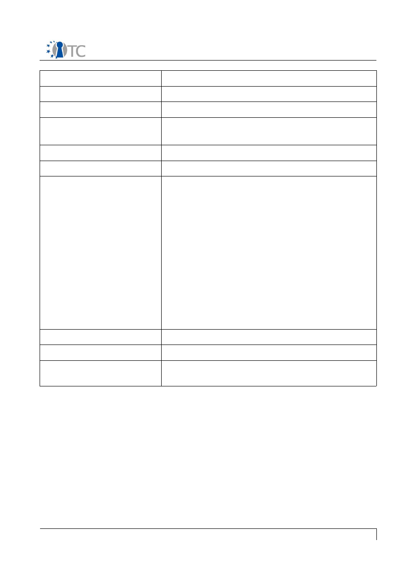
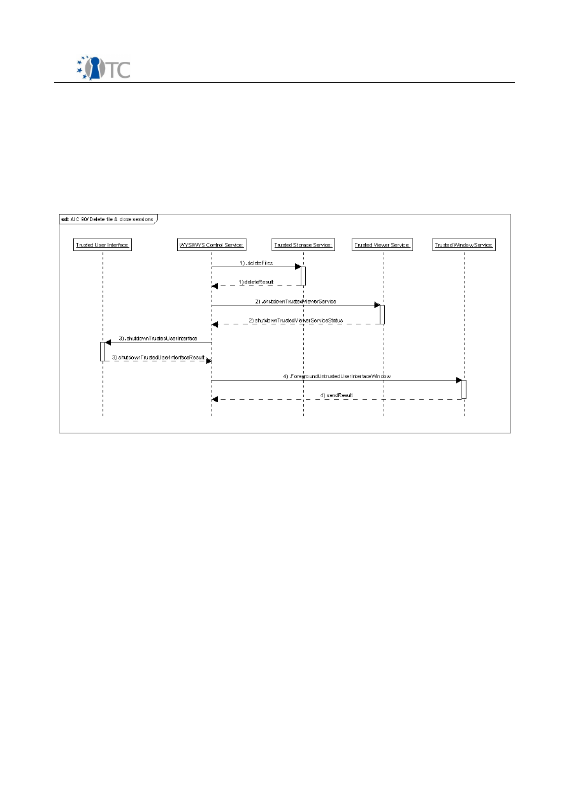

D6.5 Collection of all SWP deliverables
(nature=R) produced during months 25-36
Project number
IST-027635
Project acronym
Open_TC
Project title
Open Trusted Computing
Deliverable type
Report (see page 87/88 of Annex 1)
Deliverable reference number
IST-027635/D6.5/1.0
Deliverable title
Collection of all SWP deliverables (nature=R)
produced during months 25-36
WP contributing to the deliverable
WP6
Due date
M36 (postponed to M42)
Actual submission date
26.05.09
Responsible Organisation
LDV, Lehrstuhl fuer Datenverarbeitung, TU
Munich
Authors
Chun Hui Suen (LDV), Giovanni Cabiddu,
Gianluca Ramunno, Marco Vallini (POL),
Görkem Çetin, Kadir İmamoğlu (TUB)
Abstract
Collection of all SWP deliverables (nature=R)
produced during months 25-36
Keywords
OpenTC WP6
Dissemination level
Public
Revision
1.0
Instrument
IP
Start date of the
project
1
st
November 2005
Thematic Priority
IST
Duration
42 months

Collection of all SWP deliverables (nature=R) produced during months 25-36 V 1.0
Introduction:
This Deliverable is a collection of the following internal WP6 Deliverables out of the
Sub-Workpackages with Nature R (Report) within the period of M25 - M36:
●
D06b.5 - MEITC Use Case Document
●
D06c.2 - WYSIWYS application design specification
If you need further information, please visit our website
www.opentc.net
or contact
the coordinator:
Technikon Forschungs-und Planungsgesellschaft mbH
Burgplatz 3a, 9500 Villach, AUSTRIA
Tel.+43 4242 23355 –0
Fax. +43 4242 23355 –77
Email
coordination@opentc.net
The information in this document is provided “as is”, and no guarantee
or warranty is given that the information is fit for any particular purpose.
The user thereof uses the information at its sole risk and liability.
Open_TC Deliverable 6.5
WP06b.5 MEITC Use case document
Project number
IST 027635
Project acronym
Open_TC
Project title
Open Trusted Computing
Document type (internal/public)
Internal document
Report Number – OO Revision
OTC-17
Title
MEITC Use case document
Editor
Görkem Çetin
Authors
Görkem Çetin, Kadir İmamoğlu
Abstract
This internal deliverable is the Use case
document for MEITC system
Keywords
MEITC, TPM, TSS, Web Server, Mail Server,
Database Server, Log Service

OTC-17: MEITC Use case document
Table of Contents
1 Introduction...............................................................................................................3
2 Description.................................................................................................................3
3 Use Cases..................................................................................................................3
4 Abbreviations...........................................................................................................38
Internal document
2/39
OTC-17: MEITC Use case document
1
Introduction
The purpose of this document is to describe the use cases of the Message Exchange
Infrastructure for Trusted Computing (MEITC) which has been developed within a sub-
workpackage of the Open Trusted Computing (Open_TC) project by TUBITAK-UEKAE.
Prior to this document, TUBITAK UEKAE has released two documents, namely “D6b.3
MEITC Detailed Design and Test Document” and “D6b.2 MEITC Specification and Test
Plan”. Both documents give an overview of MEITC components.
2
Description
The MEITC system is not a self-contained system. It depends on a entire OpenTC
system (CC@H) which will be developed within the project. This system which is a
trusted environment must be ready in order to ensure that MEITC is fully functional.
The users of the MEITC system will use an unmodified web based browser (Mozilla
Firefox, Konqueror, Internet Explorer etc.) to access their accounts. Servers defined in
previous MEITC documents (I.e web server, mail server etc) will support virtualization,
and will also fully support TPM functions. Access to web servers will be realized
through a web based browser. In order to increase the trustworthiness of the whole
system, web browser and web server will communicate on a secure channel by using
HTTP on top of the conventional TLS/SSL protocols.
Users will connect to MEITC system via their web based browsers. Each page of the
messaging system will be prepared using JSP and HTML. There will be two types of
users: system administrators and unprivileged user. System administrators will have
administrative privileges to manage user accounts. The other user type will not have
administrative privileges, and instead they only have access to their messages in their
own message boxes.
The user interface of MEITC will have a user-centered design, in which tasks can be
easily followed and executed by the end-user. The user interface should also satisfy
the general requirements of the customer as the software evolves. End-users of MEITC
will see a simple webmail that will give them the ability to read, send and delete e-
mails (or other actions) they would like to take.
For more information about MEITC, refer to “Third MEITC Prototype” document
(D06b.7-Third MEITC Prototype.odt).
3
Use Cases
In this section, we will see what the users and the system administrators can do when
using the MEITC system.
General assumptions and requirements
The assumptions below describe the security aspects of the environment in which this
prototype will be used. These assumptions are heavily based on PET Banking
Demonstrator Use Cases document.
AR 10: Correct hardware
Internal document
3/39

OTC-17: MEITC Use case document
The underlying hardware is non-malicious and behaves as expected. Optionally, the
correct properties of the hardware can be attested using a platform certificate.
AR 20: Trusted Administrator
Standard services for compartment administration and platform management must be
trusted to act in accordance with the wishes of users, since they have to access
security-critical information.
AR 30: Physical attacks
Physical attacks against the underlying hardware platform must not happen.
AR 40: Xen based system
The MEITC system will benefit from virtualization, so, a Xen based system should
already be installed on the system, featuring dom0 (the hypervisor) and domAPP (the
virtual machines).
AR 50: Trusted bootloader
A trusted bootloader, specifically tGRUB, is required in order to to measure the
integrity of the system.
AR 60: TPM driver
A TPM driver is required to reach the TPM module on the mainboard.
AR 70: Trusted Software Stack (TSS)
A trusted software stack (v1.x) is required to use the TPM driver.
AR 80: OpenSSL TPM Engine
An openssl tpm engine is required to access TPM hardware with an openssl
application.
Internal document
4/39
OTC-17: MEITC Use case document
UC name
UC 10: MEITC system startup
Primary actors
System administrator
Stakeholders and interest
All MEITC servers
Assumptions
1. The MEITC components are installed on a
trusted computing base
2. The TPM ownership is already taken by the
system administrator
Postconditions
All the servers have remotely attested and are up
and running
Main flow
1. dom0 is powered on by the administrator
2. dom0 is checked and booted by tGRUB
3. dom0 starts up the Database (DB), Web
Server (WS) and Mail Server (MS) servers
on different domAPP compartments
4. dom0 checks running status of the domAPP
compartments
5. If all the domAPP compartments are up and
running, then dom0 and each of the
compartments establish a connection
6. WS establishes a connection with DB
7. WS establishes a connection with MS
Alternative flow
2.a If the integrity checking process fails, the
system halts
5.a.1 If one of the compartments does not boot
properly, then the system administrator makes
sure that the corresponding domAPP starts
5.a.2 Operation continues with step 3
System requirements
See general assumptions in section 3 "Use Cases"
Open issues
None
Internal document
5/39
OTC-17: MEITC Use case document
UC name
UC 11: Taking TPM Ownership
Primary actors
System administrator
Stakeholders and interest
All MEITC servers
Assumptions
1. The MEITC components are installed on a
trusted computing base
2. The ownership of the system's TPM has not
yet been taken
Postconditions
TPM Ownership has been taken
Main flow
1. The ownership of the system's TPM is
properly taken
Alternative flow
1. The system administrator takes the
ownership of the system. As part of this
process, he specifies the owner password
System requirements
See general assumptions in section 3 "Use Cases"
Open issues
None
Internal document
6/39
OTC-17: MEITC Use case document
UC name
UC 13: MEITC system shutdown
Primary actors
System administrator
Stakeholders and interest
All MEITC servers
Assumptions
1. The MEITC components are installed on a
trusted computing base
2. The TPM ownership is already taken by the
system administrator
Preconditions
/UC 10/
Postconditions
All the servers are shut down
Main flow
1. domDB is powered off by the administrator
2. domAPP is powered off by the administrator
3. dom0 is powered off by the administrator
Alternative flow
None
System requirements
See general assumptions in section 3 "Use Cases"
Open issues
None
Internal document
7/39

OTC-17: MEITC Use case document
UC name
UC 40: Adding a new user
Primary actors
System administrator
Stakeholders and interest
MEITC web server, MEITC database server, web
browser
Assumptions
The system administrator is logged in to the
system
Postconditions
User is created
Main flow
1. System administrator uses the web
interface to choose “add user” operation
2. System administrator enters the user
details using the web interface
3. Web browser checks all fields to ensure
there are no empty fields
4. Web server demands from the database if
the entered username is already defined
5. Database server responds that the user is
not already defined
6. User information is registered to the
database server
7. Database server informs the web server
that a new user has been created
8. Web server informs the administrator that
the new user has been created
Alternative flow
4.a.1 If the user is already defined the database
server sends an error message to web server.
4.a.2 Web server displays the message on the
web browser.
4.a.3 Web browser demands from the system
administrator to enter the user's details one more
time.
4.a.4 The operations continue with step 2
System requirements
See general assumptions in section 3 "Use Cases"
Open issues
None
Internal document
8/39
OTC-17: MEITC Use case document
UC name
UC 45: Updating an existing user
Primary actors
System administrator
Stakeholders and interest
MEITC web server, MEITC database server, web
browser
Assumptions
1. The system administrator is logged in to
the system
Preconditions
/UC 40/
Postconditions
User updated
Main flow
1. System administrator chooses “update
user” operation from the web interface
2. System administrator enters the updated
user details using the web interface
3. Web browser checks all fields to ensure
there are no empty fields
4. Web server sends the user update
information to the database server
5. User information is updated in the database
6. Database server informs the web server
that the user details have been updated
7. Web server informs system administrator
that the user details have been updated
Alternative flow
4.a.1 If an empty field exists the browser shows
an error message to the user
4.a.2 Web browser demands that the system
administrator enters the updated users details
one more time
4.a.3 The operations continue with the step 2
System requirements
See general assumptions in section 3 "Use Cases"
Open issues
None
Internal document
9/39
OTC-17: MEITC Use case document
UC name
UC 50: Deleting an existing user
Primary actors
System administrator
Stakeholders and interest
MEITC web server, MEITC database server, web
browser
Assumptions
The system administrator is logged in to the
system
Postconditions
User is deleted
Main flow
1. System administrator uses the web
interface to choose “delete user” operation
2. System administrator enters the username
to be deleted to the web interface
3. Web server demands from the database
whether this username is already defined
4. Database server responds that username is
already defined
5. Web server sends a confirmation request to
the web browser
6. Web browser requests confirmation from
the system administrator
7. System administrator confirms the
operation
8. Web browser sends the confirmation to the
web server
9. Web server sends the delete operation to
the database server
10.User is deleted from the database and a
message is sent to the web server
11.Web server passes this message to the web
browser
12.Web browser displays that the selected
user is deleted
Alternative flow
4.a.1 If the user is not already defined, database
server sends to the web server an error message
4.a.2 Web server displays this message on web
browser
4.a.3 Web browser requests from the system
administrator to select another username
4.a.4 The operation continues with the step 2
Internal document
10/39
OTC-17: MEITC Use case document
7.a.1 System administrator does not confirm the
operation
7.a.2 Operation is interrupted
System requirements
See general assumptions in section 3 "Use Cases"
Open issues
None
Internal document
11/39
OTC-17: MEITC Use case document
UC name
UC 55: Adding an administrator user
Primary actors
System administrator
Stakeholders and interest
MEITC web server, MEITC database server, web
browser
Assumptions
The system administrator is logged in to the
system
Postconditions
Administrator user created
Main flow
1. System administrator uses the web
interface to choose “add admin” operation
2. System administrator enters the
administrator user details using the web
interface
3. Web server demands from the database if
the entered administrator username is
already defined
4. Database server responds that the
administrator user is not already defined
5. Administrator user information is registered
to the database
6. Database server informs the web server
that new administrator user is created
7. Web server informs administrator that the
new administrator user is created
Alternative flow
4.a.1 If the administrator user is already defined
the database server sends an error message to
web server
4.a.2 Web server displays the message on the
web browser
4.a.3 Web browser demands from the system
administrator to enter administrator user's
information one more time
4.a.4 The operation continues with the step 2
System requirements
See general assumptions in section 3 "Use Cases"
Open issues
None
Internal document
12/39
OTC-17: MEITC Use case document
UC name
UC 56: Updating an existing administrator
user
Primary actors
System administrator
Stakeholders and interest
MEITC web server, MEITC database server, web
browser
Assumptions
The system administrator is logged in to the
system
Preconditions
/UC 55/
Postconditions
Administrator user updated
Main flow
1. System administrator uses the web
interface to choose “update administrator
user” operation
2. System administrator enters updated
administrator user details using the web
interface
3. Web browser checks to ensure there are no
empty fields
4. Web server sends the updated
administrator user details to the database
server
5. Administrator user information is updated
to the database
6. Database server informs the web server
that the administrator user details have
been updated
7. Web server informs administrator that the
administrator user details have been
updated
Alternative flow
4.a.1 If an empty field is exists the browser shows
an error message to the user
4.a.2 Web browser demands from the system
administrator to enter updated administrator
user's information one more time
4.a.3 The operations continue with the step 2
System requirements
See general assumptions in section 3 "Use Cases"
Open issues
None
Internal document
13/39
OTC-17: MEITC Use case document
UC name
UC 57: Delete an administrator user
Primary actors
System administrator
Stakeholders and interest
MEITC web server, MEITC database server, web
browser
Assumptions
The system administrator is logged in to the
system
Preconditions
/UC 55/
Postconditions
Admin user is deleted
Main flow
1. System administrator uses the web
interface to choose “delete administrator
user” operation
2. System administrator selects the
administrator username to be deleted from
the web interface
3. Web server demands from the database
whether this administrator username is
already defined
4. Database server indicates that the
administrator username is already defined
5. Web server sends a confirmation request to
the web browser
6. Web browser requests confirmation from
the system administrator
7. System administrator confirms the
operation
8. Web browser sends the confirmation to the
web server
9. Web server sends the delete operation to
the database server
10.Administrator user is deleted from the
database and a message is sent to the web
server
11.Web server passes this message to the web
browser
12.Web browser displays that the selected
administrator user is deleted
Alternative flow
4.a.1 If the administrator user is not already
defined, database server sends to the web server
Internal document
14/39
OTC-17: MEITC Use case document
an error message
4.a.2 Web server displays this message on web
browser
4.a.3 Web browser requests from the system
administrator to select another administrator
username
4.a.4 The operation continues with the step 2
7.a.1 System administrator doesn't confirm the
operation
7.a.2 Operation is interrupted
System requirements
See general assumptions in section 3 "Use Cases"
Open issues
None
Internal document
15/39
OTC-17: MEITC Use case document
UC name
UC 60: User authenticates via MEITC
Primary actors
User
Stakeholders and interest
All MEITC servers and web browser on client side
Assumptions
1. User is already defined in MEITC system
2. A web browser is installed in the client side
platform
Postconditions
User is authenticated via MEITC
Main flow
1. User opens web browser in the client side
2. User enters her username and password
3. Web browser sends username and
password to the web server
4. Web server establishes a secure channel
with MEITC mail server
5. Web server sends username and password
to the mail server
6. Mail server establishes a secure channel
with the database server
7. Mail server asks the database server for the
username and password
8. Database server returns username and
password
9. Mail server checks username and password
with the database server
Alternative flow
10.a. If the authentication process fails, operation
stops
System requirements
See general assumptions in section 3 "Use Cases"
Open issues
1. How (or whether) to implement the mutual
remote attestation is still an issue
Internal document
16/39
OTC-17: MEITC Use case document
UC name
UC 100: Accessing user's inbox
Primary actors
User
Stakeholders and interest
All MEITC servers
Assumptions
1. MEITC system is running
2. The user is authenticated as in UC 60
Postconditions
User accesses her inbox
Main flow
1. WS connects to MS for accessing the mail
inbox data of the user
2. MS gets the inbox data from DB server
3. DB server gives the user data to MS
4. MS sends the data to WS
5. WS forwards the data to the client
6. User chooses next operation
Alternative flow
1.a.1 If MS is not properly functioning, then web
server gives an appropriate error message and
goes back to login page
2.a.1 If DB is not properly functioning, then web
server gives an appropriate error message and
goes back to login page
System requirements
See general assumptions in section 3 "Use Cases"
Open issues
None
Internal document
17/39
OTC-17: MEITC Use case document
UC name
UC 110: Sending an e-mail
Primary actors
User
Stakeholders and interest
All MEITC servers
Assumptions
1. MEITC system is running
2. User is authenticated as in UC 60
3. User can read mails as explained in UC 100
Postconditions
User sends an e-mail
Main flow
1. User composes the e-mail and selects the
signing and encryption options
2. Client sends the e-mail data to the WS
3. WS sends the e-mail data to the MS
4. MS sends the e-mail data to the CS for
signing and encrypting the e-mail
5. MS generates the signature for the e-mail
by using the sender's private key and/or
encrypts it by using the public keys of the
recipient
6. MS logs the e-mail transmission information
7. MS stores a record that contains details of
the e-mail
8. MS sends the e-mail data to the DB
9. DB stores the signed and/or encrypted e-
mail to the sender's and the recipients'
mailboxes
10.MS sends the acknowledge of the operation
and the update of the mailbox to the WS
11.WS forwards the acknowledge to the web
browser
Alternative flow
1. In any of the steps above, if the
corresponding (affected) server is not
functioning properly, then the WS sends a
reply showing the error to the user
System requirements
See general assumptions in section 3 "Use Cases"
Open issues
None
Internal document
18/39
OTC-17: MEITC Use case document
UC name
UC 120: Deleting an e-mail
Primary actors
User
Stakeholders and interest
All MEITC servers
Assumptions
1. MEITC system is running, not necessarily
with all compartments
2. The user is authenticated as in UC 60
3. The user can read her e-mail as explained
in UC 100
4. The user has her inbox open
Postconditions
The user deletes the selected e-mail
Main flow
1. User selects the appropriate e-mail to be
deleted
2. User clicks on the "Delete" button
3. WS sends this information to MS
4. MS deletes the e-mail and informs DB
5. E-mail is deleted from the DB
Alternative flow
1. In any of the steps above, if the
corresponding (affected) server is not
functioning properly, then the WS sends a
reply showing the error to the user
System requirements
See general assumptions in section 3 "Use Cases"
Open issues
None
Internal document
19/39
OTC-17: MEITC Use case document
UC name
UC 130: Backup MEITC System
Primary actors
System administrator
Stakeholders and interest
All MEITC servers
Assumptions
1. MEITC system is running
2. Admin user is logged in
Preconditions
/UC 10/
Postconditions
MEITC system backup will be taken
Main flow
1. Administrator user clicks on "Backup" link
under the Administrator menu
2. Web Browser sends this link request to the
WS
3. WS (domAPP) retrieves database structure
and data from DB and writes to a text file
This text file will be archived and
compressed in .tar.gz file format
4. WS archives and compresses users mail
directories. Users' mails are located in MS
in a directory
5. Administrator user will be asked whether to
download this file or not
Alternative flow
None
System requirements
See general assumptions in section 3 "Use Cases"
Open issues
None
Internal document
20/39
OTC-17: MEITC Use case document
UC name
UC 200: Requesting a certificate
Primary actors
User
Stakeholders and interest
All MEITC servers
Assumptions
1. MEITC system is running
2. User logins to the certificate manager
Postconditions
User requests a certificate
Main flow
1. User requests for a new self signed
certificate
2. This request is stored in the DB repository.
3. As the administrator logs in, he is asked to
accept or reject the request
4. As administrator accepts, the certificate is
generated
5. Certificate generation information is sent to
the user
Alternative flow
3.a. System administrator rejects revoking
process
System requirements
See general assumptions in section 3 "Use Cases"
Open issues
Normally, this should be done by system
administrator. Usual certificate requesting
mechanisms will be investigated
Internal document
21/39
OTC-17: MEITC Use case document
UC name
UC 205: Requesting a certificate for user via
administrator panel
Primary actors
System administrator
Stakeholders and interest
All MEITC servers
Assumptions
1. MEITC system is running
2. Administrator user is logged in
Postconditions
Administrator user requests a user certificate
Main flow
1. Administrator user clicks to the "requests
for a new user certificate" link
2. Administrator user enters all users'
certificate request data information
3. Client sends this information to the WS
4. WS checks availability of the user
5. If the user exist WS sends this request to
CS
6. CS generates the certificate request and
stores it to the DB repository
7. WS forwards the acknowledge to the web
browser that the certificate request is
generated
Alternative flow
5.a. If the user doesn't exist in the system
5.a.1 If the user doesn't exist in the system the
administrator makes sure that the entered user is
defined
5.a.2 Operation continues with step 2
System requirements
See general assumptions in section 3 "Use Cases"
Open issues
None
Internal document
22/39
OTC-17: MEITC Use case document
UC name
UC 210: Revoking a certificate
Primary actors
User
Stakeholders and interest
All MEITC servers
Assumptions
1. MEITC system is running
2. User has a certificate
3. User logins to the certificate manager
Postconditions
Certificate is revoked
Main flow
1. User asks for his certificate to be revoked
2. This request is stored in the DB repository
3. When the administrator logs in, he is asked
to accept or reject the revocation
4. If the administrator accepts, the certificate
is revoked
5. Certificate revocation information is sent to
the user
Alternative flow
3.a. System administrator rejects the revocation
System requirements
See general assumptions in section 3 "Use Cases"
Open issues
None
Internal document
23/39
OTC-17: MEITC Use case document
UC name
UC 220: Viewing a certificate
Primary actors
User
Stakeholders and interest
All MEITC servers
Assumptions
1. MEITC system is running
2. User logins to the certificate manager
3. User already has a certificate
Postconditions
User views the selected certificate
Main flow
1. User clicks on the menu item in order to
view the certificate
Alternative flow
None
System requirements
See general assumptions in section 3 "Use Cases"
Open issues
All users should be able to see other's certificates
Internal document
24/39
OTC-17: MEITC Use case document
UC name
UC 230: Accepting a certificate request
Primary actors
User
Stakeholders and interest
All MEITC servers
Assumptions
1. User has requested a certificate as in UC
200
2. MEITC system is running
3. Administrator logins to the certificate
manager
Postconditions
Certificate request is granted and certificate is
generated
Main flow
1. Administrator views the certificate request
2. Administrator accepts the certificate
request
3. Certificate is generated by CS and stored
on the database
4. When the user logs in again, he'll be
informed that certificate is generated
Alternative flow
3.a. System administrator rejects certificate
request
System requirements
See general assumptions in section 3 "Use Cases"
Open issues
None
Internal document
25/39
OTC-17: MEITC Use case document
UC name
UC 240: Accepting a certificate revocation
request
Primary actors
User
Stakeholders and interest
All MEITC servers
Assumptions
1. User has issues a certificate revocation
request as in UC 210
2. MEITC system is running
3. Administrator logins to the certificate
manager
Postconditions
Certificate revocation request is accepted and
certificate is revoked
Main flow
1. Administrator views the certificate
revocation request
2. Administrator accepts the certificate
revocation request
3. Certificate is revoked by CS and revocation
information is stored on the database
4. Certificate is deleted from the DB
Alternative flow
3.a. System administrator rejects certificate
revocation request
System requirements
See general assumptions in section 3 "Use Cases"
Open issues
This process can optionally be issued
automatically by the system, immediately after a
user request, without administrator intervention
Internal document
26/39
OTC-17: MEITC Use case document
UC name
UC 270: Signing an e-mail
Primary actors
User
Stakeholders and interest
All MEITC servers
Assumptions
1. MEITC system is running
2. User is authenticated as in UC 60
Postconditions
User sends a signed e-mail
Main flow
1. User selects the signing option and
composes the e-mail
2. Client sends the e-mail data to the WS
3. WS sends the e-mail data to the MS
4. MS generates the signature for the e-mail
by using the sender's private key
5. MS logs the e-mail transmission information
6. MS stores a record that contains details of
the e-mail
7. MS stores the signed e-mail data to the
recipients' mailbox directory
8. MS sends the acknowledge of the operation
and the update of the mailbox to the WS
9. WS forwards the acknowledge to the web
browser
Alternative flow
1. In any of the steps above, if the corresponding
(affected) server is not functioning properly, then
the WS sends a reply showing the error to the
user
4.a.1 If the sender user's private key is not
available, the message is not signed
4.a.2 Operation is interrupted
System requirements
See general assumptions in section 3 "Use Cases"
Open issues
None
Internal document
27/39
OTC-17: MEITC Use case document
UC name
UC 280: Encrypting an e-mail
Primary actors
User
Stakeholders and interest
All MEITC servers
Assumptions
1. MEITC system is running
2. User is authenticated as in UC 60
Postconditions
User sends an encrypted e-mail
Main flow
1. User selects the encryption options and
composes the e-mail
2. Client sends the e-mail data to the WS
3. WS sends the e-mail data to the MS
4. MS encrypts the e-mail by using the public
key of the recipient
5. MS stores the encrypted e-mail data to the
recipients' mailbox directory
6. MS sends the acknowledge of the operation
and the update of the mailbox to the WS
7. WS forwards the acknowledge to the web
browser
Alternative flow
1. 1. In any of the steps above, if the corresponding
(affected) server is not functioning properly, then
the WS sends a reply showing the error to the
user
4.a.1 If the recipient user's public key is not
available, the message is not encrypted
4.a.2 Operation is interrupted
System requirements
See general assumptions in section 3 "Use Cases"
Open issues
None
Internal document
28/39
OTC-17: MEITC Use case document
UC name
UC 290: Decrypting an e-mail
Primary actors
User
Stakeholders and interest
All MEITC servers
Assumptions
1. MEITC system is running
2. User is authenticated as in UC 60
3. E-Mail is encrypted as in UC 280
4. User can access inbox as in UC 100
Preconditions
/UC 280/
Postconditions
User decrypts the encrypted e-mail
Main flow
1. User tries to open encrypted e-mail
2. Client sends the request to the WS
3. WS sends the request to the MS
4. MS decrypts the e-mail by using senders'
private key
5. MS sends the decrypted e-mail data to the
WS
6. WS sends the encrypted email data to the
web browser
7. User read the message
Alternative flow
1. In any of the steps above, if the corresponding
(affected) server is not functioning properly, then
the WS sends a reply showing the error to the
user
4.a.1 If the user's private key is not available, the
message is not decrypted
4.a.2 Operation is interrupted
System requirements
See general assumptions in section 3 "Use Cases"
Open issues
None
Internal document
29/39

OTC-17: MEITC Use case document
UC name
UC 300: Encrypting system logs
Primary actors
System administrator
Stakeholders and interest
All MEITC servers
Assumptions
1. MEITC system is running.
2. Administrator user is logged in
Preconditions
/UC 10/
Postconditions
MEITC log files will be encrypted
Main flow
1. Administrator user clicks on “Log services”
menu
2. Administrator user chooses the a log type.
This log type can be MySQL, Maillog,
Tomcat Apache or MEITC application log
3. Log file is encrypted by using TPM based
certificate. This certificate is created by
using openssl tpm engine
4. Timestamp information will be added to the
encrypted log file name, like
log_file.YYYYMMDDHHMMSS.enc
5. This encrypted log file is be archived and
compressed
6. User downloads the encrypted file
Alternative flow
None
System requirements
See general assumptions in section 3 "Use Cases"
Open issues
Trusted time and privacy CA services which will
be developed in OpenTC are not ready
Internal document
30/39

OTC-17: MEITC Use case document
UC name
UC 310: Decrypting system logs
Primary actors
System administrator
Stakeholders and interest
All MEITC servers
Assumptions
1. MEITC system is running.
2. Administrator user is logged in
Preconditions
/UC 10/
/UC 300/
Postconditions
MEITC log files will be decrypted
Main flow
1. Administrator user clicks on “Log services”
menu
2. Administrator user chooses an encrypted
log file
3. This log file is decrypted by using log server
key and CA application.
4. Decrypted log file is archived and
decompressed
5. Administrator user downloads this
decrypted file
Alternative flow
None
System requirements
See general assumptions in section 3 "Use Cases"
Open issues
Trusted time and privacy CA services which will
be developed in OpenTC are not ready
Internal document
31/39
OTC-17: MEITC Use case document
UC name
UC 320: Showing TPM / TSS Status
Primary actors
System administrator
Stakeholders and interest
All MEITC servers
Assumptions
1. MEITC system is running.
2. Administrator user is logged in
Postconditions
TPM / TSS Status information shown
Main flow
1. Administrator user clicks on "TPM / TSS
Status" link under the TPM Configurator
menu
2. Web Browser sends this link request to the
WS
3. WS (domAPP) opens SSH tunnel to dom0
4. In dom0 TPM / TSS status (whether it's
running or not) is checked by using TPM
Tools
5. WS sends TPM Status data to the web
browser
Alternative flow
3.a. If the SSH Tunnel doesn't open to dom0 from
domAPP
3.a.1 If the SSH Tunnel doesn't open to dom0
from domAPP the administrator makes sure that
the all MEITC services is running
3.a.2 Operation continues with step 2
4.a. If the TPM Tools does not run in the dom0
4.a.1 If the TPM Tools application does not run in
the dom0 the administrator makes sure that the
application is running properly
4.a.2 Operation continues with step 2
System requirements
See general assumptions in section 3 "Use Cases"
Open issues
None
Internal document
32/39
OTC-17: MEITC Use case document
UC name
UC 330: Showing TPM / TSS Details
Primary actors
System administrator
Stakeholders and interest
All MEITC servers
Assumptions
1. MEITC system is running.
2. Administrator user is logged in
Postconditions
TPM / TSS detailed information shown
Main flow
1. Administrator user clicks on "TPM / TSS
Detail" link under the TPM Configurator
menu
2. Web Browser sends this link request to the
WS
3. WS (domAPP) opens SSH tunnel to dom0
4. In dom0 TPM / TSS detail information (PCR
values) is checked by using TPM Tools
5. WS sends TPM detail data to the web
browser
Alternative flow
3.a. If SSH tunnel doesn't open from domAPP to
dom0
3.a.1 Administrator makes sure that all MEITC
services is running
3.a.2 Operation continues with step 2
4.a. If the TPM Tools does not run in the dom0
4.a.1 If the TPM Tools application does not run in
dom0, administrator makes sure that application
is running properly
4.a.2 Operation continues with step 2
System requirements
See general assumptions in section 3 "Use Cases"
Open issues
None
Internal document
33/39
OTC-17: MEITC Use case document
UC name
UC 340: Logging out from MEITC admin
panel
Primary actors
System administrator
Stakeholders and interest
Web server and web browser on client side
Assumptions
1. Administrator user is already defined
2. A web browser is installed in the client side
Preconditions
Administrator user is authenticated
Postconditions
Administrator user is logged out
Main flow
1. User clicks the "Logout" link on the MEITC
administrator panel
2. Web browser sends the logout request to
the web server
3. Web server destroys administrator users
session information
4. WS forwards the acknowledge to the web
browser. In the acknowledge message it
says the administrator user is logged out of
the system
Alternative flow
None
System requirements
See general assumptions in section 3 "Use Cases"
Open issues
None
Internal document
34/39
OTC-17: MEITC Use case document
UC name
UC 350: Logging out from the MEITC
Certmanager
Primary actors
User
Stakeholders and interest
Web server and web browser on client side
Assumptions
1. User is already defined in MEITC
certmanager system.
2. A web browser is installed in the client side
platform
Preconditions
User is authenticated to the MEITC certmanager
Postconditions
User is logged out from the MEITC certmanager
Main flow
1. User clicks on "Logout" link on the MEITC
certmanager
2. Web browser sends a logout request to the
web server
3. Web server destroys user session
information
4. WS forwards the acknowledgement to the
web browser. In the acknowledgement
message it says the user is logged out from
the system
Alternative flow
None
System requirements
See general assumptions in section 3 "Use Cases"
Open issues
None
Internal document
35/39
OTC-17: MEITC Use case document
UC name
UC 360: Creating TPM based log certificate
file for signing MEITC logs
Primary actors
System administrator
Stakeholders and interest
All MEITC servers
Assumptions
1. MEITC system is running
2. Administrator user is logged in
Postconditions
TPM based certificate is created
Main flow
1. Administrator user clicks to "Create TPM
based log certificate" link under the Log
Management menu
2. In the TPM based certificate status page,
administrator user clicks “create TPM based
log certificate” button, if this certificate file
is not created before
3. Web browser sends this link request to WS
4. WS (domAPP) opens SSH tunnel to dom0
5. In dom0 a log key file is created using
openssl TPM engine application.
6. In dom0, TPM based certificate is created
using the previously created log keyfile,
openssl and openssl TPM engine
applications
Alternative flow
4.a. If the SSH Tunnel is not created from
domAPP to dom0
4.a.1 Administrator makes sure that all MEITC
services is running
4.a.2 Operation continues with step 2
5.a. If TSS doesn't run in dom0
5.a.1 Administrator makes sure that the
application is running properly
5.a.2 Operation continues with step 6
System requirements
See general assumptions in section 3 "Use Cases"
Open issues
Trousers is used as TSS
Internal document
36/39
OTC-17: MEITC Use case document
UC name
UC 370: Signing MEITC Log files with TPM
based log certificate
Primary actors
System administrator
Stakeholders and interest
All MEITC servers
Assumptions
1. MEITC system is running
2. Administrator user is logged in
Preconditions
/UC 360/
Postconditions
MEITC log file is signed with TPM based certificate
Main flow
1. Administrator user clicks to "MEITC logs"
link under the Log Management menu
2. In MEITC log page, administrator user
selects the component (MySQL, Tomcat) to
be signed
3. Web browser sends this link request to the
WS
4. WS (domAPP) opens SSH tunnel to dom0
5. In dom0 a sha1 log file of the selected
MEITC component is created using the log
file and sha1sum command
6. In dom0 sha1 log file is signed with TPM
based log certificate file. Openssl and
openssl TPM engine is used in this process
Alternative flow
4.a. If an SSH tunnel is not created from domAPP
to dom0
4.a.1 Administrator makes sure that the all
MEITC services is running
4.a.2 Operation continues with step 2
5.a. If TSS doesn't run in dom0
5.a.1 Administrator makes sure that application is
running properly
5.a.2 Operation continues with step 6
System requirements
See general assumptions in section 3 "Use Cases"
Open issues
Trousers is used as TSS
Internal document
37/39
OTC-17: MEITC Use case document
UC name
UC 380: Verifying Signed MEITC Log Files
Primary actors
System administrator
Stakeholders and interest
All MEITC servers
Assumptions
1. MEITC system is running
2. Administrator user is logged in
Preconditions
/UC 360/
/UC 370/
Postconditions
Signed MEITC log file is verified with tpm based
log certificate
Main flow
1. Administrator user clicks on “Verify logs”
link under Log Management menu
2. In the MEITC verify logs page, user clicks
the file to be verified
3. Web browser sends this link request to WS
4. WS (domAPP) opens an SSH tunnel to dom0
5. In dom0 compartment, selected MEITC
signed log file is verified with TPM based
log certificate
Alternative flow
4.a. If an SSH tunnel is not created from domAPP
to dom0
4.a.1 Administrator makes sure that all MEITC
services are running
4.a.2 Operation continues with step 2
System requirements
See general assumptions in section 3 "Use Cases"
Open issues
None
4
Abbreviations
Abbreviations used in this report are given in Table 1.
Table 1. Abbreviations
Abbreviation
Terminology
Definition
CS
Certificate Service
CS is the certificate service provider for
MEITC
TPM
Trusted Platform
Module
The TPM is a micro controller that stores
keys, passwords and digital certificates.
TSS
Trusted Software
The TSS is a software specification that
Internal document
38/39
OTC-17: MEITC Use case document
Abbreviation
Terminology
Definition
Stack
provides a standard API (Application
Programming Interface) for accessing the
functions of the TPM.
PCR
Platform
Configuration
Register
The measurement results of the
configuration by a TPM module are stored
in a platform configuration register inside
of the TPM module as PCR values.
OPENTC
Open Trusted
Computing
OPEN TC consortium is an R&D project
focusing on the development of trusted
and secure computing systems based on
open source software.
MEITC
Message Exchange
Infrastructure for
Trusted Computing
MEITC is a secure message exchange
environment.
HTTP
Hyper Text Transfer
Protocol
HTTP, the actual communications protocol
that enables web browsing
OpenSSL
Open Secure
Socket Layer
OpenSSL is a popular package to add
cryptographic security to applications
communicating over a network
JSP
Java Server Pages
Java Server Pages (JSP) are normal HTML
with Java code pieces embedded in them.
A JSP compiler is used to generate a
Servlet from the JSP page.
HTML
Hypertext (or
HyperText) Markup
Language
HTML is a language to specify the
structure of documents for retrieval
across the Internet using browser
programs of the WorldWideWeb
TC
Trusted Computing Trusted computing is a combination of
software and hardware supporting
applications to ensure that data cannot
be accessed unless the user’s system is
operating as expected and has not been
tampered with
LS
Log Service
LS is used in MEITC system
MS
Mail Server
MS is a component of MEITC system
WS
Web Server
WS is a component of MEITC system
DB
Database
DB server is a component of MEITC
system
Internal document
39/39
WP06.c2: WYSIWYS application design
specification
Project number
IST- 027635
Project acronym
Open_TC
Project title
Open Trusted Computing
Deliverable type
Internal deliverable
Deliverable reference number
IST-027635/D06c.2/FINAL 1.10
Deliverable title
WYSIWYS application design specification
WP contributing to the deliverable
WP6
Due date
Apr 2008 - M30
Actual submission date
Apr 2009
Responsible Organisation
Politecnico di Torino
Authors
Giovanni Cabiddu, Gianluca Ramunno, Marco
Vallini (POL)
Abstract
WYSIWYS is a functional and security
requirement for electronic signatures,
especially when used in legal contexts. This
document consists in the design specification
for a WYSIWYS application suitable for
OpenTC security architecture and satisfying
the WYSIWYS requirement. It also includes
the updated high level requirements
specification: for this reason it supersedes
the deliverable D06c.1. Finally it includes
some implementation detail of the prototype
delivered as D06c.3.
Keywords
WYSIWYS, Trusted Computing, Virtualization
Dissemination level
Public
Revision
FINAL 1.10
Instrument
IP
Start date of the
project
1
st
November 2005
Thematic Priority
IST
Duration
42 months
SWP06c WYSIWYS application design specification
FINAL 1.10
Table of Contents
1 Motivation and problem description..........................................................................6
2 Security Environment................................................................................................7
2.1 Assumptions..........................................................................................................7
2.2 Threats...................................................................................................................9
3 Functional Requirements (Use Case Model)............................................................11
3.1 Goal.....................................................................................................................11
3.2 Target Groups......................................................................................................11
3.3 Roles and Actors..................................................................................................11
3.4 Overview..............................................................................................................11
3.5 Use Cases (Detailed Description).........................................................................12
3.5.1 Sign a document.............................................................................................13
3.5.2 Verify a signed document................................................................................14
3.5.3 Basic operations..............................................................................................15
4 Security Objectives & Security Requirements.........................................................23
4.1 Security Objectives..............................................................................................23
4.2 Security Requirements.........................................................................................24
5 Supplementary Requirements................................................................................25
5.1 Preconditions.......................................................................................................25
5.2 Required Criteria..................................................................................................25
5.3 Desired Criteria....................................................................................................25
5.4 Distinguishing Criteria..........................................................................................26
5.5 Execution Environment........................................................................................26
5.5.1 Software..........................................................................................................26
5.5.2 Hardware.........................................................................................................26
5.6 Development Environment..................................................................................26
5.6.1 Software..........................................................................................................26
5.6.2 Hardware.........................................................................................................26
6 Architecture for WYSIWYS: Trusted Computing and Virtualization..........................27
6.1 Compartments and integrity measures...............................................................27
6.2 Solutions for integrity binding..............................................................................29
6.2.1 Keys and data structures................................................................................30
6.2.2 Three phases bind...........................................................................................31
6.2.3 Conditions.......................................................................................................32
6.2.4 Initialization phase..........................................................................................33
6.2.5 Discussion on other types of binding...............................................................33
6.3 Proving the WYSIWYS requirement......................................................................34
7 High-Level Software Architecture...........................................................................36
7.1 Introduction.........................................................................................................36
7.2 Logical views........................................................................................................36
7.2.1 Packages.........................................................................................................36
7.2.2 Use case realisation........................................................................................38
8 Design.....................................................................................................................49
8.1 Communication between modules.......................................................................49
8.1.1 wys_commlib library........................................................................................51
8.1.2 Interactions between modules........................................................................53
8.2 Modules................................................................................................................54
8.2.1 WYSIWYS Control Service (CS)........................................................................54
8.2.2 Signing Device Interface (SDI).........................................................................55
Open_TC Deliverable 06c.2
2/81

SWP06c WYSIWYS application design specification
FINAL 1.10
8.2.3 Trusted Integrity Service (TIS).........................................................................57
8.2.4 Trusted Storage Service (TS)...........................................................................59
8.2.5 Trusted User Interface (TUI)............................................................................60
8.2.6 Trusted Viewer Service (TVS)..........................................................................63
8.2.7 Trusted Window Service (TWS).......................................................................64
8.2.8 Untrusted User Interface (UUI)........................................................................65
9 Implementation details...........................................................................................66
9.1 Three phase bind.................................................................................................66
9.1.1 Key Registration..............................................................................................67
9.1.2 Signature process............................................................................................68
9.1.3 WYSIWYS Application startup..........................................................................70
9.1.4 Drivers.............................................................................................................71
10 Security requirements for signature creation applications...................................75
11 List of Abbreviations.............................................................................................79
12 Acknowledgements...............................................................................................80
13 References............................................................................................................81
Open_TC Deliverable 06c.2
3/81

SWP06c WYSIWYS application design specification
FINAL 1.10
List of figures
Figure 1: Use cases diagram........................................................................................12
Figure 2: Keys...............................................................................................................31
Figure 3: Three phase bind scheme..............................................................................32
Figure 4: Package diagram...........................................................................................36
Figure 5: UC 30 sequence diagram...............................................................................40
Figure 6: UC 40 sequence diagram...............................................................................41
Figure 7: UC 50 sequence diagram...............................................................................42
Figure 8: UC 60 sequence diagram...............................................................................43
Figure 9: UC 65 sequence diagram...............................................................................44
Figure 10: UC 70 sequence diagram.............................................................................46
Figure 11: UC 80 sequence diagram.............................................................................47
Figure 12: UC 90 sequence diagram.............................................................................48
Figure 13: Tag-Length-Value .......................................................................................49
Figure 14: T field...........................................................................................................49
Figure 15: Stack of libraries..........................................................................................50
Figure 16: Interactions between modules.....................................................................53
Figure 17: Trusted Integrity Service DB........................................................................67
Figure 18: Drivel Model.................................................................................................71
Figure 19: SDI software stack for POLITO Student's Smart Card..................................73
Open_TC Deliverable 06c.2
4/81

SWP06c WYSIWYS application design specification
FINAL 1.10
List of Tables
Table 1: Packages required by use cases.....................................................................39
Open_TC Deliverable 06c.2
5/81

SWP06c WYSIWYS application design specification
FINAL 1.10
1 Motivation and problem description
“What You See Is What You Sign” (WYSIWYS) is a functional and security requirement
for electronic signatures, especially when used in legal contexts (e.g. the European
Directive 1999/93/EC [9] on electronic signatures). To guarantee the trustworthiness
of the content displayed and being signed, there is the need to guarantee a trusted
path from the signing (or verifying) application to the user and in the opposite
direction. Many past and present solutions that claim to be WYSIWYS compliant, in
reality they are not. In fact they do not protect against Trojan software or other
“malware” that can either modify the document image displayed to the user or the
user’s input to activate the signing device operations. This is caused by the insecure
architecture of the I/O subsystems integrated within the current monolithic Operating
Systems.
Therefore the design of a WYSIWYS application must also take into account the
underlying architecture in order to guarantee the actual trustworthiness of the
application. In particular trusted input/output paths between the application and the
user must be must be in place in order to guarantee the correct binding between the
document presentation and the data actually signed or verified.
The security properties and services provided by OpenTC architecture can be used as
foundation for a WYSIWYS application; enabling features from OpenTC are the trusted
GUI and the assurance about the integrity of the Trusted Computing Base including
hypervisor, operating system, and applications. Moreover memory isolation through
virtualization and information flow control policies allow designing the WYSIWYS
application in a modular fashion with a strong confinement of components with
different levels of requirements for strength.
Another relevant aspect is the correctness of the document presentation. Given the
complexity of the current document formats, there is no sufficient market for
designing and implementing trustworthy viewers solely for the purpose of secure
electronic signatures. We therefore use a pragmatic approach for achieving this
requirement. Standard applications used to produce the documents being signed can
be used as “trusted viewers” provided that they are properly configured to avoid
hidden content, and dynamic content depending on the platform configuration or on
the time when the document is presented.
This document includes the design specification for a WYSIWYS application for a
reference architecture of an application for signing and verifying electronic documents
that satisfies the WYSIWYS requirement. It also includes the updated high level
requirements specification: for this reason it supersedes the deliverable D06c.1 [8].
Finally it includes some implementation detail of the prototype delivered as D06c.3.
Open_TC Deliverable 06c.2
6/81
SWP06c WYSIWYS application design specification
FINAL 1.10
2 Security Environment
This section describes the security aspects of the environment in which the
product is intended to be used and the manner in which it is expected to be
employed.
2.1 Assumptions
A description of assumptions shall describe the security aspects of the
environment in which the Target of Evaluation (TOE) will be used or is intended
to be used. This shall include the following:
●
information about the intended usage of the TOE, including such aspects
as the intended application, potential asset value, and possible limitations
of use; and
●
information about the environment of use of the TOE, including physical,
personnel, and connectivity aspects.
/A 10/ Trusted Administrator
The security administrator of the system is non-malicious.
/A 20/ Correct hardware
The underlying hardware (e.g., CPU, devices, TPM, ...) does not contain backdoors, is
non-malicious and behaves as specified.
/A 30/ No Physical attacks
Physical attacks against the underlying hardware platform do not happen.
/A 40/ TOE Binding
The IT-environment offers a mechanism that allows the TOE (WYSIWYS application) to
store information and data like signing keys such that it cannot be accessed by
another TOE configuration. Example mechanisms are the sealing function offered by a
TPM as specified by the TCG in combination with an authenticated bootstrap
architecture, or a tamper-resistant storage in combination with a secure bootstrap
architecture.
/A 50/ No man-in-the-middle attack
The user can determine whether he/she has a direct trusted path to the video and
keyboard interfaces of the computer. A physical attack that relays the whole
communication between a local user and the Input/Output devices to another device
does not happen.
/A 60/ Trusted video path
The architecture underlying TOE provides a reliable and secure video output path.
Open_TC Deliverable 06c.2
7/81

SWP06c WYSIWYS application design specification
FINAL 1.10
/A 70/ Trusted input paths
The architecture underlying TOE provides reliable and secure paths for input devices
(keyboard, mouse, etc.).
/A 80/ Trusted path to cryptographic devices
The architecture underlying TOE, i.e. the TCB, provides a reliable and secure path to
signing devices.
/A 90/ CRTM, TPM, boot loader, VMM and basic security services are
trustworthy
The architecture underlying TOE, namely Core Root of Trust for Measurement (CRTM),
TPM, boot loader, Virtual Machine Monitor (VMM) and services providing security
features behave as expected. All of them are referred to as Trusted Computing Base
(TCB) hereinafter.
/A 100/ TCB guarantees memory isolation between VMs
The TCB guarantees memory isolation between Virtual Machines (VMs) also called
compartments.
/A 110/ TCB is able to enforce security policies for information flow control
The TCB can enforce security policies for information flow control between
compartments: it can guarantee authenticity, integrity and confidentiality of
communication channels among compartments.
/A 120/ TCB prevents exploits and replay attacks
The TCB is designed to prevent exploits of uncritical applications to gain access to
security sensitive information and replay attacks, namely resetting the state of an
application by replaying an older state.
/A 130/ TCB provides secure installation services for TOE
TCB provides installation services for all security critical applications like TOE.
/A 140/ Integrity of TOE is guaranteed by TCB
The TCB guarantees the integrity of TOE: either preventing TOE from running if it
compromised or allowing TOE to be started but alerting the user about TOE being
compromised.
/A 150/ TCB provides secure GUI
The TCB provides a way to distinguish Trusted Compartments from untrusted ones
when shown.
/A 160/ Atomic operations and internal data
The TCB guarantees that operations that are required to be atomic are executed
Open_TC Deliverable 06c.2
8/81
SWP06c WYSIWYS application design specification
FINAL 1.10
properly. If the operation fails, all internal data related with that procedure are
deleted.
/A 170/ TCB allows selected VMs to interact with a remote system
The TCB, if needed, can enable any compartment to interact with a remote system (for
example a server on the Internet). All interactions are enforced by security policies.
2.2 Threats
A description of threats shall include all threats to the assets against which
specific protection within the TOE or its environment is required. Note that not all
possible threats that might be encountered in the environment need to be listed,
only those which are relevant for secure TOE operation.
A threat shall be described in terms of an identified threat agent, the attack, and
the asset that is the subject of the attack. Threat agents should be described by
addressing aspects such as expertise, available resources, and motivation.
Attacks should be described by addressing aspects such as attack methods, any
vulnerabilities exploited, and opportunity.
If security objectives are derived from only organizational security policies and
assumptions, then the description of threats may be omitted.
/T 10/ Trojan Horse
An adversary may try to get access to sensitive information by deceiving
Administrators or Users such that an application under control of the adversary claims
to be the TOE.
/T 20/ Unauthorised User
An unauthorised user may use TOE to read or modify information owned by another
user.
/T 30/ Unauthorised Administrator
An unauthorised user may use a management functionality of the TOE to grant itself
access to sensitive information.
/T 40/ Unauthorised Data Access
An unauthorised application may read or manipulate user information persistently
stored by TOE.
/T 50/ Denial of Service
An adversary may try to prevent that authorised users can use the TOE by denial of
service attacks against the TCB or the TOE itself.
/T 60/ Document replacement when displayed
A malicious application may try to replace the document being displayed to fool the
user.
Open_TC Deliverable 06c.2
9/81

SWP06c WYSIWYS application design specification
FINAL 1.10
/T 70/ Document replacement when being signed
A malicious application may try to replace the document being signed with another
one while keeping displayed the document selected by the user.
/T 80/ Incorrect document visualisation by output device
The output device may not be able to correctly represent all document details, e.g.
due to screen resolution or output device size not enough for a correct representation
or a limited set of available colours.
/T 90/ Misinterpretation of document format
The format of the document to be signed or verified may be wrongly interpreted by
the viewer.
/T 100/ Dynamic code embedded in the document
The document may include dynamic code (i.e. macros) which can, without invalidating
the signature, modify the document visualisation if different platforms are used or the
document is displayed at different times (e.g. signature or verification time).
/T 110/ Hidden content
The document may include hidden content being signed (e.g. text in the same colour
as the background) without the user being able to notice it.
/T 120/ Third party software bugs and failures
Software made by a third party, like a document viewer for a specific document
format, used inside a VM, may contains bugs and can cause malfunctioning.
Furthermore, that software may accidentally embed malware code.
/T 130/ Replay attacks using valid platform attestation values
An adversary may try to use
valid
attestation informations to certify a signature
generated by a
rogue
platform.
/T 140/ Signature invalidation
An adversary may try to invalidate a good digital signature or a valid platform
attestation.
Open_TC Deliverable 06c.2
10/81
SWP06c WYSIWYS application design specification
FINAL 1.10
3 Functional Requirements (Use Case Model)
3.1 Goal
The goal is designing an application for signing and verifying an electronic document
such that the WYSIWYS requirement is met. Furthermore, the application must provide
a way to prove that a signature is made by a platform in a known state - i.e. that
meets the WYSIWYS requirement - giving additional guarantees to the signer and the
verifier. To achieve this goal, the design is based on the OpenTC platform, a security
architecture built on top of Trusted Computing and virtualization technologies. The
application performs the following operations: displaying the document to be signed
and electronically signing the document, displaying an already signed document and
verifying the electronic signature.
3.2 Target Groups
Defines the users/other components that wish to use the product.
●
Home user (Single-user platform at home)
●
Employee (Multi-user platform in enterprise environment)
3.3 Roles and Actors
In this section we define different roles and actors important for the use case
model. Actors are parties outside the system that interact with the system; an
actor can be a class of users, roles users can play, or other systems. Note that,
depending on the use case, some parties or actors may not be involved.
User
: The user of a computing platform is an entity interacting with the platform
under the platform's security policy. Examples are employees using enterprise-owned
hardware.
3.4 Overview
The user can use WYSIWYS application to perform two main operations:
1. signing a document
2. verifying a signed document
Open_TC Deliverable 06c.2
11/81
SWP06c WYSIWYS application design specification
FINAL 1.10
3.5 Use Cases (Detailed Description)
Each use case focuses on describing how to achieve a single business goal or
task. From a traditional software engineering perspective a use case describes
just one feature of the system. For most software projects this means that
multiple, perhaps dozens, of use cases are needed to fully specify the new
system. The degree of formality of a particular software project and the stage of
the project will influence the level of detail required in each use case.
A use case defines the interactions between external actors and the system
under consideration to accomplish a business goal.
Use cases treat the system as a "black box", and the interactions with the
system, including system responses, are perceived as such from outside the
system. This is a deliberate policy, because it simplifies the description of
requirements, and avoids the trap of making assumptions about how this
functionality will be accomplished.
A use case should:
●
describe a business task to serve a business goal
●
have no implementation-specific language
●
be at the appropriate level of detail
●
be short enough to implement by one software developer in a single
release.
Open_TC Deliverable 06c.2
12/81
Figure 1: Use cases diagram
SWP06c WYSIWYS application design specification
FINAL 1.10
3.5.1 Sign a document
Use case unique ID
/UC 10/
Title
Sign document
Short description/purpose(s)
The user wants to sign a document
Actors
User
Includes
/UC 30/ Send file to WYSIWYS
/UC 40/ Display document
/UC 50/ Choose operation
/UC 60/ Choose signing device & key
/UC 65/ Show attributes and confirm
/UC 70/ Create signed document
/UC 90/ Delete files & close sessions
Preconditions
WYSIWYS application is running
Postcondition
The user receives back the signed
document
Normal Flow
1. Send file to WYSIWYS application
/UC 30/
2. Display document /UC 40/
3. Choose operation (sign) /UC 50/
4. Choose signing device & key /UC
60/
5. Show attributes and confirm /UC
65/
6. Create signed document /UC 70/
7. Delete file & close sessions /UC 90/
Open_TC Deliverable 06c.2
13/81
SWP06c WYSIWYS application design specification
FINAL 1.10
3.5.2 Verify a signed document
Use case unique ID
/UC 20/
Title
Verify signed document
Short description/purpose(s)
The user wants to verify a signature
applied to a document
Actors
User
Includes
/UC 30/ Send file to WYSIWYS application
/UC 40/ Display document
/UC 50/ Choose operation
/UC 80/ Signature verification
/UC 90/ Delete file & close sessions
Preconditions
WYSIWYS application is running
Postcondition
The user receives the result of signature
verification
Normal Flow
1. Send file to WYSIWYS application
/UC 30/
2. Display document /UC 40/
3. Choose operation (verify) /UC 50/
4. Signature verification /UC 80/
5. Delete file & sessions /UC 90/
Open_TC Deliverable 06c.2
14/81
SWP06c WYSIWYS application design specification
FINAL 1.10
3.5.3 Basic operations
3.5.3.1 Send file to WYSIWYS application
Use case unique ID
/UC 30/
Title
Send file to WYSIWYS application
Short description/purpose(s)
The user sends file to WYSIWYS
application
Actors
User
Preconditions
WYSIWYS application is running
Postcondition
The document is loaded into WYSIWYS
application
Normal Flow
1. The user sends the application the
document's file using a proper
command
2. The application saves the
document internally
3. The application activates a trusted
interface for user interaction
Open_TC Deliverable 06c.2
15/81
SWP06c WYSIWYS application design specification
FINAL 1.10
3.5.3.2 Display document
Use case unique ID
/UC 40/
Title
Display document
Short description/purpose(s)
The application shows the document and
guarantees a trustworthy display
Preconditions
/UC 30/
Postcondition
The document is shown to the user
Normal Flow
1. The application activates the
correct viewer for the document
format
2. The application loads the document
file from an internal storage
3. The application performs some
checks in the document (e.g.
macro, hidden text) and alerts the
user if their results fail
4. The document is displayed to the
user
Open_TC Deliverable 06c.2
16/81
SWP06c WYSIWYS application design specification
FINAL 1.10
3.5.3.3 Choose operation
Use case unique ID
/UC 50/
Title
Choose operation
Short description/purpose(s)
The user chooses to sign or verify a
document
Actors
User
Preconditions
/UC 40/
Postcondition
The user has chosen the operation to be
executed
Normal Flow
1. The user is required to choose one
operation
2. The user decides to sign or verify
the document
3. The application takes charge of
user's choice
Open_TC Deliverable 06c.2
17/81
SWP06c WYSIWYS application design specification
FINAL 1.10
3.5.3.4 Choose signing device & key
Use case unique ID
/UC 60/
Title
Choose signing device & key
Short description/purpose(s)
The user selects the signing device and
key
Actors
User
Preconditions
/UC 50/
Postcondition
The signing device and the key are
chosen
Normal Flow
1. The application shows to the user
the list of available signing devices
2. The user chooses the signing
device
3. The application shows to the user
the list of available keys
4. The user chooses the signing key
Open_TC Deliverable 06c.2
18/81
SWP06c WYSIWYS application design specification
FINAL 1.10
3.5.3.5 Show signing attributes and confirm
Use case unique ID
/UC 65/
Title
Show signing attributes and confirm
Short description/purpose(s)
The application shows the signing
attributes (i.e. the attributes being
signed) and asks the user if he/she really
wants to sign the presented document
and attributes
Actors
User
Preconditions
/UC 60/
Postcondition
The user has decided if he/she wants to
continue the operation
Normal Flow
1. The application shows to the user
the list of signing attributes
2. The user decides if he/she wants to
confirm the signing operation
Open_TC Deliverable 06c.2
19/81
SWP06c WYSIWYS application design specification
FINAL 1.10
3.5.3.6 Create signed document
Use case unique ID
/UC 70/
Title
Create signed document
Short description/purpose(s)
Create the file containing the signed
document
Preconditions
/UC 65/
Postcondition
The user receives the signed document
Normal Flow
1. The application loads the document
to be signed from the internal
storage
2. The selected signing device
generates the electronic signature
over document file using the
selected key
3. The application creates the file
containing the document, the
signature and the attestation of the
state of integrity of the platform
4. The application returns to the user
the signed document
Open_TC Deliverable 06c.2
20/81
SWP06c WYSIWYS application design specification
FINAL 1.10
3.5.3.7 Signature verification
Use case unique ID
/UC 80/
Title
Signature verification
Short description/purpose(s)
The application verifies the correctness of
the electronic signature over the
document
Preconditions
/UC 50/
Postcondition
The user receives the result of verification
Normal Flow
1. The application loads the signed
document to be verified from the
internal storage
2. The application actually verifies the
correctness of the signature
3. The application returns the result of
the verification to the user
Open_TC Deliverable 06c.2
21/81
SWP06c WYSIWYS application design specification
FINAL 1.10
3.5.3.8 Delete file & close sessions
Use case unique ID
/UC 90/
Title
Delete file & close sessions
Short description/purpose(s)
All sessions are destroyed and the file
internally saved is deleted
Preconditions
/UC 70/ or /UC 80/
Postcondition
The application returned to its initial
state, ready to perform another operation
(sign or verify)
Normal Flow
1. The application deletes the file
from the internal storage
2. The application closes all sessions
Open_TC Deliverable 06c.2
22/81
SWP06c WYSIWYS application design specification
FINAL 1.10
4 Security Objectives & Security Requirements
4.1 Security Objectives
The security objectives shall address all of the security environment aspects
identified. The security objectives shall reflect the stated intent and shall be
suitable to counter all identified threats and cover all identified organizational
security policies and assumptions. A threat may be countered by one or more
objectives for the product, one or more objectives for the environment, or a
combination of these.
/SO 10/ Separability
The use of different security-critical TOE components based on the OpenTC security
architecture has to be at least as secure as the execution of the same applications on
physically separated computing platforms connected via network.
/SO 20/ No unauthorized use of TOE components
Unauthorized entities must not be able to arbitrarily execute TOE components.
/SO 30/ Visual identification of TOE User Interface
The user must be able to reliably identify the User Interface of TOE.
/SO 40/ Correct visualisation of the document
TOE must correctly visualise the document being signed or verified.
/SO 50/ Binding between visualisation and signature/verification operations
TOE must actually sign or verify the document being displayed to the user.
/SO 60/ Guarantee the integrity of the components
Building upon the TCB, TOE must be able to guarantee the integrity of the components
that compose the TOE itself to both the signer and the verifier.
/SO 70/ Report the state of integrity of the platform to a remote party
TOE must be able to reliably report to a third party the state of integrity of the
platform – also including the TOE - held during the signing operations. The state must
be bound to the signature.
/SO 80/ Digital Signature
TOE must be able to produce Digital Signatures that can be classified as the so called
Qualified Electronic Signatures (QES) signatures, i.e. the Advanced Electronic
Signatures based on a Qualified Certificate and generated through a Secure Signature
Creation Device [9].
Open_TC Deliverable 06c.2
23/81
SWP06c WYSIWYS application design specification
FINAL 1.10
NOTE
: the present document does not include requirements and design items related
to the “classic” aspects of a Public Key Infrastructure (PKI), like Time Stamping,
Revocation Status Checking and others, required by a QES.
4.2 Security Requirements
This part of the requirement specification defines the security requirements that
have to be satisfied by the product. The statements shall define the functional
and assurance security requirements that the product and the supporting
evidence for its evaluation need to satisfy in order to meet the security
objectives.
/SR 10/ No communication among TOE components and external parties
Security policies should be enforced to guarantee that TOE components cannot
interact with external parties, with the exception of a single component acting as
interface towards compartments not belonging to the TOE.
/SR 20/ Information flow
Security policies should be enforced to guarantee that information flow is only possible
among TOE components. Primarily, eavesdropping on another, non-cooperating
compartment must be foiled.
/SR 30/ Integrity of document to be signed or verified
TOE should guarantee that the displayed document cannot be corrupted while being
signed or verified.
/SR 40/ Trusted WORM Storage
The TOE should use a trusted storage Write Once Read Many (WORM) for storing
documents to be signed or verified and used by TOE components during all
intermediate operations. The document is loaded once by the TOE and stored onto the
WORM storage; all components can then read the document but not modify it; the
document can be deleted at the end of operations.
/SR 50/ Trusted RW Storage
The TOE should use a trusted storage Read/Write for temporary files during
operations.
/SR 60/ Integrity of the application
TOE should use Trusted Computing functions for measuring the integrity of the
components that compose the TOE. The TOE should locally enforce the integrity of the
components (e.g. by using sealing for data required by TOE to be operational).
/SR 70/ Signature binding
TOE should bind the signature (with legal value) with the integrity state of the signing
platform (TCB and TOE) active during the signing operation. This way it is possible to
guarantee and report the integrity of the components to a remote (verifying) party.
Open_TC Deliverable 06c.2
24/81
SWP06c WYSIWYS application design specification
FINAL 1.10
5 Supplementary Requirements
Obligatory criteria, mandatory for successful completion.
5.1 Preconditions
Requirements that have to be fulfilled already, because they were needed for the
development process.
/PR 100/ Trusted Computing Base
The TOE is build upon OpenTC, a security architecture for Trusted Computing Base.
/PR 200/ Reliable document viewer
The TOE should use at least one application that is considered reliable as viewer for
one specific document format (e.g. OpenDocument).
5.2 Required Criteria
Mandatory criteria, that are obligatory for successful completion.
/RC 10/ Xen support
The realization of the use cases should be based on a Xen-based architecture.
/RC 20/ Single-user support
The TOE should support at least one user.
/RC 30/ Cryptographic devices
The TOE should support at least one hardware and one software cryptographic device
through standard interfaces (particularly PKCS#11).
/RC 40/ Document formats
The TOE should support virtually any type of document format via plug-in based
architecture for document viewers.
5.3 Desired Criteria
Optional criteria, that are not mandatory for successful completion.
/DC 10/ Multi-user support
The security architecture should be able to handle multiple users.
/DC 20/ L4 support
The realization of the use cases should be based on an L4-based architecture.
Open_TC Deliverable 06c.2
25/81
SWP06c WYSIWYS application design specification
FINAL 1.10
/DC 30/ Cryptographic devices
The TOE should support all common cryptographic devices - hardware and software -
through standard interfaces (particularly PKCS#11).
5.4 Distinguishing Criteria
What our product does not provide.
5.5 Execution Environment
This section specifies software and hardware the user requires at least to run our
product successfully.
5.5.1 Software
●
Standard Linux 2.6.x distribution
●
Xenolinux 3.x.x (Linux 2.6.x running on top of Xen 3.x.x hypervisor)
●
OpenOffice 2.3 or higher
●
(optional) L4-Linux (Linux 2.6.x running on top of Fiasco, L4V2 µ-kernel)
5.5.2 Hardware
●
Intel LT/VT or AMD-V Platform
●
TPM 1.2 Platform
5.6 Development Environment
This section specifies hard- and software that developers need at least to
implement the product successfully.
5.6.1 Software
●
Linux 2.6.x
●
gcc 4.2.x
●
eclipse-3.1
●
OpenOffice 2.3 or higher
5.6.2 Hardware
●
Intel LT/VT or AMD-V Platform
●
TPM 1.2 Platform
Open_TC Deliverable 06c.2
26/81

SWP06c WYSIWYS application design specification
FINAL 1.10
6 Architecture for WYSIWYS: Trusted Computing and
Virtualization
Nowadays many software manufacturers assert their digital signature applications are
compliant to WYSIWYS requirement; it is not really true. Even if a digital signature
application can be correct, ideally devoid of worms, it could not be the same for the
system where that software is installed. Usually it is a PC class platform where an
operating system like MS-Windows or Linux and applications have vulnerabilities.
These ones may compromise the whole signature system, if conveniently exploited
(see [1]). Furthermore, the Internet encourages the spread of malware or trojan horses
that a attacker may use to achieve his intents.
Very often a user installs on his PC any kind of software being unaware of its
provenance or trustworthiness. In those conditions how is it possible to know if the
installed software does exactly what the manufacturer has declared? The only way
could be checking the whole software source code; sometimes it is not available or, if
it is , analysing it requires an advanced knowledge in computer science and much
time. Assuming that a software manufacturer behaves correctly, which way a
“traditional” platform can be used for securely signing (or verifying) a document (or a
signature)? Moreover, how is it possible to guarantee that the input and the output of
the application have not been tampered with? The simplest solution may be to have
an isolated system, without any connection with other machines (the outside world),
where hardware and software are carefully checked. In that machine should be
installed only the operating system, the essential drivers and the sign/verify
application. Furthermore in that computer must not be possible to install other
software and only the owner must have physical access.
In addition, in order to guarantee the WYSIWYS requirement, other security criteria
should be met. In fact some threats are related to the document itself when it is
shown to the signer and the verifier. Thus, in a possibly strict solution the document
must be created directly on the same machine used for signing and the signature
software must not allow neither the presence of active code in the document (i.e.
macro) nor hidden text. Or a document created on an untrusted platform should be
moved to a controlled platform used to validate the document with a trusted viewer
prior to signing.
These solutions appear, nevertheless, limiting because they prevent the utilization of
the machine for other purposes. Moreover, they are not still complete because they do
not allow proving to third parties that the signature was made in a “protected”
environment namely with specific security characteristics that satisfy the WYSIWYS
requirement.
The suggested example is useful to focus on some relevant aspects: isolation, system
trustworthiness (according to [2]) and remote attestation of platform integrity. All
these elements are the foundation of the software application, i.e. the TOE, whose
design will be presented. Such application, by means of Trusted Computing and
virtualization, overcomes or mitigates the limitation of the model based on a physical
platform completely isolated.
6.1 Compartments and integrity measures
To avoid having a physical platform being isolated from the the outside world, it is
Open_TC Deliverable 06c.2
27/81

SWP06c WYSIWYS application design specification
FINAL 1.10
possible to use virtualization techniques. This kind of technology allows executing on a
single physical computer different instances of virtual machines (VMs) completely
isolated
1
from each other. This allows strongly separating into
compartments
the
software components being executed at the same time on a machine.
A central aspect of the application's design is the subdivision in functional modules
that will be executed on different VMs. Communication between modules will happen
through well known interfaces and will be regulated by policies that will limit the
interaction down to the bare minimum. The compartments will have minimum size and
run verified software components. All these countermeasures minimize risks due to
vulnerabilities that can be present in the signature application. Particularly, isolation
and strict communication policies minimize the opportunity that a bug could be
exploited from outside the application – namely from another virtual machine, for
example, that is used by the user for the daily work or other physical machines. Or
that the effects of a possible malfunctioning of a component triggered during normal
operations compromises the security or the availability of other modules
2
.
All these components will be executed on a TCB (
Trusted Computing Base)
that is a
set of hardware and software in charge of VMs management and security policy
enforcement that implements security mechanisms and
Trusted Services
3
. The TCB
vouches for realization of a trusted path between the user and the application, and the
effective fulfilment of the policies that regulate the communications between VMs and
the application itself. Finally, it guarantees that other virtual machines cannot
interfere with the application and can interact with it only using a limited and well
known interface. It is therefore required that the TCB must be trustworthy.
To the architecture previously described – that allows satisfying the WYSIWYS
requirement – it is possible to apply Trusted Computing technologies that allow
achieving additional guarantees during the signing or verification acts. (1) Each time
the signer uses the application, it guarantees that the signature system is in a specific
state (hopefully “
good”
) (integrity check), namely in the same state assumed during
the installation phase. (2) The verifier (or a third party, for example a judge in the
event of dispute) can verify that the signature was created on a platform that meets
the WYSIWYS requirement by identifying all components. (3) The verifier (or a third
party) can repeat in a reliable way the visualization experience of the document had
by the signer or could try to have another experience, however as close as possible to
the signer's one. The guarantees (2) and (3) form an evidence that makes a signature
with WYSIWYS technically more strong compared to signatures generated using legacy
software.
For this purpose the TCB must be bound to the TPM
(Trusted Platform Module)
that
measures all components and builds the
Chain Of Trust.
Each component of the TCB
1 Each virtual machine cannot access the memory of other VMs running at the same time.
2 From this viewpoint, the most critical component is the document visualization software.
Ideally, for each document format should be developed an ad-hoc viewer, whose correctness
of implementation should be formally verified. Practically, it is highly improbable that a
software company decides to develop and maintain such kind of application. A pragmatic
approach to solve this problem can be using, as viewers, the legacy applications used to
create the documents: probably they implement the best interpretation of the document
formats but it is difficult to assume that they are correctly implemented.
3 The design of the application relies upon the properties and the services given by OpenTC
architecture. This guarantees the integrity of the measurements of the architecture and the
application.
Open_TC Deliverable 06c.2
28/81
SWP06c WYSIWYS application design specification
FINAL 1.10
must be measured before its execution
4
; similarly for the application modules
5
.
The measurements are useful for two reasons: (1) retrieving encrypted data
associated to a specific integrity state of the platform (
unsealing)
, namely associated
to the TCB and the TOE, i.e. the signature application: the impossibility to access some
data shows to the signer that the state of the platform is changed; (2) reporting to
third parties the integrity state of the platform through the so-called remote
attestation
6
.
For the daily operations, like handling e-mails and producing documents that will be
signed, the user can use one or more
untrusted
compartments; even if a virus or a
trojan horse were installed in one of them, the signature application would not be
compromised.
6.2 Solutions for integrity binding
One of the problems to contend with is how to strongly bind a digital signature with an
attestation of the platform state. It is necessary to prove to a verifier that during the
signing time:
●
the platform was in a well-known state;
●
if the measured state was “good”
7
the signer watched the document correctly
shown and he signed it on his own free will
8
.
In order to carry out signatures with strong legal value (QES) according to Italian and
European laws, digital signatures must be generated using an external device (
Secure
Signature Creation Device – SSCD),
like a smart card,
which must be certified as
compliant with a Protection Profile [4] Common Criteria. SSCD hedges in the user's
private key; at signature time, it receives from the platform a hash of the file to sign
and a PIN (if the SSCD or the connecting device like a smart card reader does not have
a numerical keypad for inputting the PIN) essential for the authentication of the device
owner. If the PIN is correct, the private key is unblocked and is used to apply the
signature algorithm to the document hash; the result, a blob that represents the
digital signature, is returned to the platform.
By using the TPM it is possible to prove that the SSCD has been controlled by a trusted
platform
9
that was in a known state. The fact that the signer's key
K
sign
is not protected
4 The measurements are stored in particular TPM's registers called PCR. Each PCR can be
updated only by means of an operation called “extending” PCRs: PCR
new
= SHA1(PCR
old
||
Measurement) where the measurement is the hash of the binaries of the component.
5 In this case the measurement is the hash of the binaries of the compartment (i.e. the whole
file system) and of its configuration.
6 Measurements do not suggest that the software does not contains pitfalls or it is good, but
they allow identifying the components running on the machine, thus letting verify that a
known configuration is in place. In a signature application, the integrity measurements will
be useful for reporting, namely, that the application behaves correctly and guarantees
trusted paths.
7 A machine is intended to be in a good state if it behaves correctly.
8 All cases of legal repudiation are excluded whereas, also using a
good
platform that
guarantees correctness and technical non-repudiation, a person signs against his will
because is threaten or is of unsound mind.
9 This guarantees, for example, that the hash sent to the device was not replaced in transit or
the unblocking PIN of the device will not be stolen during the signature generation and after
injected by an attacker to make another signature.
Open_TC Deliverable 06c.2
29/81

SWP06c WYSIWYS application design specification
FINAL 1.10
by TPM poses a problem to be solved.
In the TCG architecture, the verification of the integrity state on a remote user side (in
this case the verification of a signature) is known as remote attestation. A technique
for producing an evidence that a particular event (for example the signature) happens
when the platform is in a particular state can be wrapping the event via cryptographic
methods, namely through digital signatures, between two remote attestations, one
before and the other one after the event occurs. If the states returned by both
attestations are identical, then the event occurred when the platform was in such
state.
The mechanism chosen for the attestation is implicit: instead of the
TPM_quote()
operation, a TPM key sealed (namely associated to a particular state of the platform)
and certified is used.
Using that key with success for generating a signature means that the unsealing
operation succeeded, namely the platform is in the state indicated in the certification
applied to the key.
Consequently the association between digital signature with legal recognition
appended to a document and the integrity state of the platform at signing time is
realized with a solution based on multiple hierarchical signatures:
the three phases
bind.
To carry to the verifier the whole needed information (resolution, colour depth, result
of checks done on the document, etc.) for reproducing the same representation of the
document the signer experienced, a collection of state data will be the input of the
signature process that forms the first attestation, done with the sealed and certified
TPM key.
It is a kind of attestation with no interaction with a verifier during the attestation
process; therefore the random data normally chosen by the verifier to prevent replay
attacks (namely a possible reuse of integrity informations) must be supplied in a
different way. The first signature will be performed on the signer's public key and on
the document itself.
The data input for the first signature and the signature itself, will be signed together
with the document via a SSCD as by law enacted. From the cryptographic point of
view, the document does not need to be included in the second signature since it is
already included in the first one. Nevertheless, for compatibility with standardized
formats and legacy digital signature applications, it is necessary to include the
document as main input to the second signature and the first signature as attribute to
be signed together (i.e. with a PKCS#7 envelope [3]). The second signature is
generated by a SSCD (e.g. a smart card) and will be the input for the third signature
done by the TPM, as the second attestation. The third signature can be carried as
unsigned attribute (inside the PKCS#7 envelope).
6.2.1 Keys and data structures
In order to describe the binding solution, it is necessary to list the keys and the data
structures that will be involved in the procedure:
Open_TC Deliverable 06c.2
30/81
SWP06c WYSIWYS application design specification
FINAL 1.10
Signature key (
K
sign
)
: it is a key pair (
PK
sign
,
SK
sign
) used for signing a document with
legal value. A digital certificate (X.509 [10]) issued by a Certificate Authority attests
the association between the key and the owner. For signatures with strong legal
recognition the private key
PK
sign
is kept protected in a hardware
Personal Security
Environment
, the SSCD stated by the EU directive (i.e. a USB token or a smart card)
and it is never released outside.
Attestation Identity Key (AIK key,
K
AIK
)
: the key pair
K
AIK
(
PK
AIK
, SK
AIK
) represents
one of the possible platform identities to be used during a remote attestation; with this
respect it can be considered as an alias of the
Endorsement Key
(EK Key) which
represents the unique TPM identity. It is
non-migratable
and its private part it is never
released by the TPM unencrypted - but only encrypted with the
Storage Root Key, SRK
.
Moreover, it is a key certified by a
Privacy CA
(PCA) that guarantees that the TPM is
genuine through the EK certificate. It is typically used for the remote attestation
(
TPM_Quote()
) or to certify other TPM keys (
Tspi_Key_CertifyKey()
).
The so called
Subject Key Attestation Evidence key
(SKAE Key, K
SKAE
)
: it is a TPM
key pair is
non-migratable
K
SKAE
(PK
SKAE
, SK
SKAE
)
and it is created after an AIK
(K
AIK
)
has
been certified and installed. The private part of the key is
sealed
with respect to a
specific configuration of the TCB. The public part is certified.
SKAE
: consists in (1) a
TPM_CERTIFY_INFO
structure that contains the configuration of
the TCB when
K
SKAE
was generated (and that must be in place to let the key be
released) and a digest of
PK
SKAE
, (2) the signature, through
K
AIK
of the latter block.
SKAE
is used by TCB as proposed in [5].
6.2.2 Three phases bind
Three phases bind is a solution based on three signatures
that guarantees, under
some conditions, the association between a digital signature on a document, created
with an external device, and the attestation of the platform integrity.
It is composed of three operations in sequence:
1. Attestation A – CERT-1
CERT-1 = Signature(PK
sign
||Hash(Document),K
SKAE
)
CERT-1
is the signature generated with
K
SKAE
on the public part of
K
sign
(
PK
SIGN
),
i.e. the key that will be used for signing the document with legal recognition,
concatenated with the hash of the document being signed.
CERT-1
can be
considered as the statement that the document will be signed on this platform
using
SK
sign
corresponding to
PK
sign
10
.
10
PK
sign
, furthermore, allows making CERT-1 distinguishable in case of parallel and
independent signature.
Open_TC Deliverable 06c.2
31/81
Figure 2: Keys
SWP06c WYSIWYS application design specification
FINAL 1.10
The attestation of the platform is implicit in the signature, in fact
K
SKAE
is sealed
and it can be used only if the TCB is in a known state, i.e. the one certified by
SKAE.
2. Digital Signature with legal value
FDGT = Signature(Document||CERT-1,K
SIGN
)
It is the digital signature with legal value generated by a SSCD. CERT-1 will be
inserted as signed attribute in the PKCS#7 envelope. This step asserts that
CERT-1 existed before the generation of FDGT.
3. Attestation B – CERT-3
CERT-3 = Signature(FDGT,K
SKAE
)
This signature declares that FDGT was created on the same platform that
signed CERT-1. The state of the TCB and of the application is the same as for
CERT-1 because of sealing: indeed it must be generated using the same sealed
K
SKAE
used to create CERT-1. When CERT-3 is created the TCB must verify that
PK
sign
included in CERT-1 verifies the signature FDGT (i.e. that
PK
sign
corresponds
to
SK
sign
used to sign FDGT) to avoid the release of inconsistent associations.
6.2.3 Conditions
The three phases bind requires that the TCB and the application behaves in well-
defined ways:
●
Each of the three operations must be atomic and executed in sequence; if one
of the phases fails, all data (signatures and other data) resulting from the
previous phase must be deleted;
●
The TCB must assure that there is no leakage of sensitive information before
CERT-3 is issued (see Section 6.2.5);
●
CERT-1 attestation must not be considered of any value if released alone (i.e.
without FDGT and CERT-3);
●
Before the release of the last certification block (CERT-3) all data previously
collected and all signatures previously created must be verified;
Open_TC Deliverable 06c.2
32/81
Figure 3: Three phase bind scheme

SWP06c WYSIWYS application design specification
FINAL 1.10
●
If the platform is hibernated while the signature procedure is in act, no sensitive
data must be written to the disk unless they are encrypted.
6.2.4 Initialization phase
The initialization phase can be done the first time a signing device is used together
with a platform running the TOE (i.e. the WYSIWYS application). This procedure is split
in three steps:
1. AIK key creation and certification;
2. SKAE key creation and certification through the AIK generated in (1);
3. association of the SKAE key with the keys available on the signing devices.
The AIK must be certified by a Privacy CA that verifies if the TPM is genuine through
the analysis of EK certificate and other Trusted Computing credentials.
This procedure is not essential for the
three phases bind
, but it avoids the generation
of new TPM keys for the same user at each signature, thus making the operations
faster.
In order to make the SKAE credential associated with the signing key resident in the
device, the platform may ask a Proof-Of-Possession of the private key to avoid that a
third party may install on the system keys it does not own, thus leading to a wrong
registration phase. This can be done by signing a dummy document. If the verification
succeeds, then the association between keys will be stored inside the application.
The registration phase should be only possible if the platform is in a well-known
state;
therefore it will be used with
sealing
in order to execute the TOE only if the platform is
in a good state.
If the platform was not in a “good” state during the key registration phase,
TPM_CERTIFY_INFO structure will contain unknown PCR values not representing a good
configuration. The digital signature, in that case, would have the same validity as the
one generated on a traditional platform.
6.2.5 Discussion on other types of binding
In this section two alternatives will be presented to the three phase bind that can
guarantee the integrity association with a legacy digital signature using a lower
number of steps and with more restrictive assumptions for the TCB.
Solution A: CERT-1, FDGT
In this scheme CERT-1 and FDGT are the same as described in Section 6.2.2 and are
executed in sequence. The TCB must guarantees (1) that both operations are
executed in atomic way, (2) that no data is issued before the end of the operations
and (3) the signature made by SSCD is verified against the key included in CERT-1. If
the verification in (3) does not succeeded or (1) is unsatisfied than it is possible to
mount a replay attack.
An example follows:
1. A user performs the key registration procedure of his key;
K
SKAE
is generated and
an association between the keys is created;
2. An attacker makes a device declare to be owned by the legitimate user with an
Open_TC Deliverable 06c.2
33/81

SWP06c WYSIWYS application design specification
FINAL 1.10
arbitrary
K
sign
, and generates CERT-1 in the signing platform;
3. The attacker, somehow, convinces the user to sign (alternatively: the attacker
somehow obtains the document signed by the user), with success, on a
different platform, CERT-1 and the document associated to the user. This way
the attacker may assert that the user has signed the document using a “good”
platform.
Solution B: FDGT – CERT-3
In this scheme FDGT and CERT-3 are executed in sequence. The attestation of
integrity is done after the signature with legal recognition generated by SSCD. This
scheme is vulnerable.
An example follows:
1. A user performs the key registration procedure of his key;
K
SKAE
is generated and
an association between the keys is created;
2. An attacker convinces the user to sign, on a different platform, an arbitrary
document;
3. The attacker modifies a signing device to assert that it is owned by the
legitimate user, registered during the the first step. Inside that device is held
the signature generated during the second step and the device's logic allows
releasing it when receives a “sign command”.
4. The attacker asks the trusted platform to sign the document created during the
second step using the modified device. In that way he succeeds to have the
certification that the signature has been generated on a trusted platform.
To solve this problem FDGT, should be modified by randomizing it. Another way can be
removing the keys registration procedure and generating TPM keys at every signature.
If the signatures are generated using RSA with probabilistic padding (PSS, see PKCS#1
version 2.1 [11]) or DSA, further modification are not required to make this scheme
robust.
6.3 Proving the WYSIWYS requirement
The trusted platform realizes a trusted path, namely it guarantees that the input and
the output of the application are protected against unauthorized accesses from other
applications.
Furthermore the signature application should check the document and report the
results of those checks in order to let a verifier look into them.
The result of those checks will be inserted on CERT-1. This asserts that the platform
guarantees that all those checks have been performed. Furthermore, by including in
CERT-1 all details concerning to visualization conditions (by the signer), the verifier
can re-create, in a trusted way, the experience had by the signer.
The relevant data that can be included in CERT-1 are:
●
application version;
●
file name with extension;
●
configuration of the viewer and of the environment during the visualization of
the document (resolution, colour depth);
Open_TC Deliverable 06c.2
34/81

SWP06c WYSIWYS application design specification
FINAL 1.10
●
duration of the document visualization;
●
way of visualization (zoom percentage and viewed pages);
●
properties of the document;
●
presence of macro;
●
presence of macro that depends on the time or on the machine configuration;
●
presence of hidden text (namely text with the same colour as the background);
●
sequence of warnings (about macro and hidden text) and choices made by the
user, important to provide the verifier with a report to make him/her able to
recreate the conditions and the configurations in place at signature time;
●
digest of visualization video streaming;
●
implicit information and explicit data about the transformations made on the
document before being visualized, for example a XSLt [6] transformation for a
XML document [7].
Open_TC Deliverable 06c.2
35/81

SWP06c WYSIWYS application design specification
FINAL 1.10
7 High-Level Software Architecture
7.1 Introduction
This section contains some views of a high-level software architecture for the TOE, a
WYSIWYS application. In particular the granularity of the views is at package level;
each package includes a group of components that share the same level of strength
for security requirements. Such groups can be actually compartmented using different
virtual machines. To show the interactions among those virtual machines sequence
diagrams are used, thus overloading their semantic, since they are normally used to
show interactions among objects.
7.2 Logical views
7.2.1 Packages
In figure 4 the package diagram shows the 'use' relationships among different
packages.
Open_TC Deliverable 06c.2
36/81
Figure 4: Package diagram

SWP06c WYSIWYS application design specification
FINAL 1.10
Untrusted User Interface
It is the standard interface provided to the user by the environment for daily
operations (like browsing the Internet, reading e-mails and writing documents); it
allows the user to start the WYSIWYS application and to choose the document file to
sign or verify.
Trusted User Interface
It is part of WYSIWYS application and it allows the user to interact with
WYSIWYS
Control Service
to choose the operation (sign or verify) to be executed and the related
options.
WYSIWYS Control Service
It implements the application logic and controls all packages. It receives the document
file to be signed or verified from
Untrusted User Interface
and it manages the
interactions between all packages.
Signing Devices Interface
It exposes a simple API to give access to the signing devices. Different types of
devices can be supported: software and hardware (commonly used smart-cards or
TPM). Each user can use a (sub)set of all devices the platform makes available. Such
devices hold the users' keys.
Trusted Viewer Service
It shows the document to be signed or verified. It guarantees a trustworthy
visualisation using the correct viewer with regards to the document format.
Trusted Storage Service
It allows a trusted storage of the document file for all WYSIWYS operations. It
implements a WORM storage (Write Once Read Many) which guarantees the integrity
of a file once written. Every package can write a new file (which can be read, but not
modified, by all other packages); no package but the Control Service can delete the
existing files.
Trusted Integrity Service
Controls all operations related to the integrity of the platform (i.e. interactions with the
TPM), including the creation of the platform integrity certifications that will be
embedded within the PKCS#7 envelope. It holds a database (TISdb) of keys useful for
the association between user device(s) keys and TPM keys.
Trusted Window Service
Controls which component's output must be displayed, i.e. which domain screen must
be put in foreground.
Open_TC Deliverable 06c.2
37/81

SWP06c WYSIWYS application design specification
FINAL 1.10
7.2.2 Use case realisation
Table 1 lists the required packages for the realisation of each use case. Then the
implementation of such use cases (with the details of the local attestation, i.e. the
certification) is described through the interaction of components grouped in packages
via sequence diagrams.
Open_TC Deliverable 06c.2
38/81
SWP06c WYSIWYS application design specification
FINAL 1.10
Open_TC Deliverable 06c.2
39/81
Use Case
Required packages
/UC 30/ Send file to WYSIWYS application
Untrusted User Interface,
WYSIWYS Control Service,
Trusted Storage Service,
Trusted User Interface,
Signing Devices Interface,
Trusted Window Service.
/UC 40/ Display document
WYSIWYS Control Service,
Trusted Viewer Service,
Trusted Storage Service,
Trusted Recorder Service,
Trusted Window Service.
/UC 50/ Choose operation
Trusted User Interface,
WYSIWYS Control Service.
/UC 60/ Choose signing device & key
WYSIWYS Control Service,
Signing Devices Interface,
Trusted User Interface,
Trusted Integrity Service.
/UC 65/ Show signing attributes and
confirm
WYSIWYS Control Service,
Trusted User Interface,
Trusted Storage Service,
Trusted Integrity Service.
/UC 70/ Create signed document
Trusted Integrity Service,
WYSIWYS Control Service,
Untrusted User Interface,
Trusted User Interface,
Trusted Storage Service,
Signing Devices Interface,
Untrusted User Interface.
/UC 80/ Signature verification
WYSIWYS Control Service,
Trusted User Interface,
Signing Devices Interface,
Trusted Storage Service,
Trusted Integrity Service.
/UC 90/ Delete file & close sessions
Trusted User Interface,
WYSIWYS Control Service,
Trusted Storage Service,
Trusted Viewer Service,
Trusted Window Service.
Table 1: Packages required by use cases
SWP06c WYSIWYS application design specification
FINAL 1.10
/UC 30/ Send File to WYSIWYS application
The
User
selects the file to be signed or verified through the
Untrusted User Interface
that sends that file to
WYSIWYS Control Service.
The file is then sent to
Trusted
Storage Service
that saves it in the secure Write Only Read Many storage.
Trusted
Storage Service
returns a result about the correctness of the saving operation. Then
WYSIWYS Control Service
first checks whether the file includes only the document or
an envelope complete with a signature via
Signing Devices Interface
; then it activates
the
Trusted User Interface
to interact with the
User
.
Open_TC Deliverable 06c.2
40/81
Figure 5: UC 30 sequence diagram
SWP06c WYSIWYS application design specification
FINAL 1.10
/UC 40/ Display document
WYSIWYS Control Service
requests
Trusted Viewer Service
to show the document.
Trusted Viewer Service
loads the document file directly from
Trusted Storage Service
,
then activates the proper viewer with regards to the file format and shows the
document. The
Trusted Viewer Service
performs some checks (i.e. presence of macro
or hidden text), stores the results into the
Trusted Storage Service
and returns a result
about the correctness of the display operation.
Open_TC Deliverable 06c.2
41/81
Figure 6: UC 40 sequence diagram
SWP06c WYSIWYS application design specification
FINAL 1.10
/UC 50/ Choose operation
WYSIWYS Control Service
requests
Trusted User Interface
to show the list of allowed
operations (sign or verify) to
User
. He/she selects the wanted operation and the choice
is then taken in charge of by
WYSIWYS Control Service
.
Open_TC Deliverable 06c.2
42/81
Figure 7: UC 50 sequence diagram
SWP06c WYSIWYS application design specification
FINAL 1.10
/UC 60/ Choose signing device & key
WYSIWYS Control Service
has received the command to sign the document, so it
requests
Signing Devices Interface
for the list of available signing devices for the
User
.
Through
Trusted User Interface
the
User
chooses the signing device to be used. A
similar sequence of operations is performed to allow the
User
to select the wanted
signing key for the chosen device.
Open_TC Deliverable 06c.2
43/81
Figure 8: UC 60 sequence diagram
SWP06c WYSIWYS application design specification
FINAL 1.10
/UC 65/ Show Signature attributes and confirm
WYSIWYS Control Service
requests
Trusted User Interface
to show the signing
attributes. The latter retrieves from
Trusted Integrity Service
the user's Public Key
Certificate, associated to the key selected by the user, and from the
Trusted Storage
Service
the visualization attributes previously stored. Then the
Trusted User Interface
formats the output and shows it to the user. At the end it asks the user if he/she really
wants to sign the showed document.
Open_TC Deliverable 06c.2
44/81
Figure 9: UC 65 sequence diagram

SWP06c WYSIWYS application design specification
FINAL 1.10
/UC 70/ Create signed document
WYSIWYS Control Service
requests
Trusted Integrity Service
to attest the state of the
platform.
Trusted Integrity Service
loads the document and the signing attributes from
Trusted Storage Service
, generates CERT1 by interacting with the TPM and stores it.
Then
WYSIWYS Control Service
requests
Signing Devices Interface
to sign the
document file.
Signing Devices Interface
directly loads the document file and CERT1
from
Trusted Storage Service
and signs both using the chosen device and key: the
user is requested to input the PIN through the
Trusted User Interface
. Then the
PKCS#7 file just created is stored on the
Trusted Storage Service.
Lastly
WYSIWYS
Control Service
requests
Trusted Integrity Service
to do another attestation of the
state of the platform.
Trusted Integrity Service
loads the PKCS#7 envelope just
generated and signs it, thus generating CERT3 that will be included in the envelope,
and finally it returns the signed document to
User
through the
Untrusted User
Interface
.
Open_TC Deliverable 06c.2
45/81
SWP06c WYSIWYS application design specification
FINAL 1.10
Open_TC Deliverable 06c.2
46/81
Figure 10: UC 70 sequence diagram
SWP06c WYSIWYS application design specification
FINAL 1.10
/UC 80/ Signature verification
WYSIWYS Control Service
requests
Signing Devices Interface
to verify a signed
document.
Signing Devices Interface
loads the file directly from
Trusted Storage
Service,
verifies the signature and if there is attestation information included in the
PKCS#7 envelope, it asks
Trusted Integrity Service
to check its validity. Then it returns
the result of the verification to
WYSIWYS Control Service
that in turn returns the result
to
User
through
Trusted User Interface
.
Open_TC Deliverable 06c.2
47/81
Figure 11: UC 80 sequence diagram

SWP06c WYSIWYS application design specification
FINAL 1.10
/UC 90/ Delete file & close sessions
WYSIWYS Control Service
deletes from
Trusted Storage Service
the file previously
loaded upon user's choice, then it requests
Trusted Viewer Service
and
Trusted User
Interface
to close the session opened for the requested operation. At the end,
WYSIWYS Control Service
requests
Trusted Window Service
to put the
Untrusted User
Interface
to the foreground.
Open_TC Deliverable 06c.2
48/81
Figure 12: UC 90 sequence diagram
SWP06c WYSIWYS application design specification
FINAL 1.10
8 Design
8.1 Communication between modules
Each module should be able to exchange messages with the others for cooperation, in
order to delegate the execution of operations and receive results.
At low level, each module sends messages structured in as Tag-Length-Value (TLV), as
shown in Figure 13.
TLV messages are composed by three fields: a header called tag (T), a length field (L)
and a value field (V).
T contains the command that the module must execute and some additional
controlling information. L represents the length of the field V expressed in bytes,
whereas V contains application data to transfer. The latter may encapsulate different
kinds of data that will be inserted in a precise sequence during the marshalling phase.
The application, typically, carries 16 or 32 bit integers or buffers of bytes.
T and L have a fixed length of respectively 16 and 32 bits, while V has a variable
length that can be at most 4GB. Sometimes modules do not have to exchange data
but only events; for this reason L and V are optional.
Figure 14 shows the structure of T field. As it is possible to observe, it is split in two
parts:
flags
and
cmd
.
Flags are four (4 bits) and transport control information.
●
FREE: not used, for future uses;
●
GEN_ERROR: general application failure;
●
CMD_FAILED: activated only in a replay message which shows that a request
caused a failure;
Open_TC Deliverable 06c.2
49/81
Figure 14: T field
Figure 13: Tag-Length-Value
SWP06c WYSIWYS application design specification
FINAL 1.10
●
NOPAYLOAD: the message has minimum length because it does not contain L
and V fields.
The remaining 12 bits are split in two subgroups:
●
recipient and command:
8 bits referring to the operation that must be done
by the module;
●
sender:
4 bits that refer to the module making the request. In fact, not all
modules can call all functions. This field is used to perform an additional check,
being aware that a component may change it at its convenience.
The sub field
command
has meaning only inside a module, whereas
recipient
and
sender
have a global meaning. The list of possible values for those fields is reported in
the following table.
Module
Recipient
Sender
UNTRST_USER_INTERFACE
0x-0--
0x---0
TRST_CONTROL_SERVICE
0x-1--
0x---1
TRST_STORAGE_SERVICE
0x-2--
0x---2
TRST_USER_INTERFACE
0x-3--
0x---3
TRST_VIEWER_SERVICE
0x-4--
0x---4
TRST_SIGNING_DEV_INTERFACE
0x-5--
0x---5
TRST_INTEGRITY_SERVICE
0x-6--
0x---6
TRST_WINDOW_SERVICE
0x-7--
0x---7
The libraries involved in the message building are two:
commlib
and
wys_commlib
. The
first one performs data marshalling and un-marshalling, manages the errors and
prepare TLV packet; the latter handles module commands and implements the
transport level abstraction. Figure 15 shows the library stack used by each module
composing the application.
Open_TC Deliverable 06c.2
50/81
Figure 15: Stack of libraries
SWP06c WYSIWYS application design specification
FINAL 1.10
8.1.1
wys_commlib
library
wys_commlib
is a tiny library designed to support both TCP/IP and HP-XIDC transports.
It is an abstraction layer that provides, as an interface, two main functions which
implement sending and receiving functionalities.
int _send_message (struct comm_type *_comm_type,
uint16_t tag, uint32_t length,
unsigned char *value);
int _recv_message (struct comm_type *_comm_type,
uint16_t *tag, uint32_t *length,
unsigned char *value);
_send_message
allows sending a message to another module. It takes as parameters a
tag
value, in accordance with the TLV structure previously defined, an
unsigned char
pointer to a buffer containing the data to send,
value
, and a 32 bits field,
length
, which
specifies the size in bytes of the buffer pointed by value.
_recv_message
is used to receive a message sent by a module. Similarly to the
function for sending, it takes a pointer to the received tag, value and length.
Both functions take as parameter a pointer to a
comm_type
structure that is defined as
follows:
typedef struct comm_type {
uint8_t
type;
uint16_t
source;
uint16_t
destination;
unsigned char
ct_data[14];
} COMM_TYPE, *PCOMM_TYPE;
comm_type
is a generic structure that contains a field called
type
which specifies the
underlying transport protocols and may assume two values, 0x00 (TCP/IP)
11
and 0x01
(XIDC). Furthermore there are two fields in the structure that specify the recipient
(
destination
) and the source of the current message. The
ct_data
buffer allows the
specialization of that structure, reported as follows:
typedef struct comm_type_sock {
uint8_t
type;
uint16_t
source;
uint16_t
destination;
int
fd;
unsigned char
ct_zero[(sizeof(struct comm_type) -
sizeof(uint8_t) -
sizeof(uint16_t) -
sizeof(uint16_t) -
sizeof(int))];
} COMM_TYPE_SOCK, *PCOMM_TYPE_SOCK;
typedef struct comm_type_xidc {
uint8_t
type;
11 This value refers to the transport that can be set up through the system call:
socket (int
domain
, int
type
, int
protocol
)
where
domain
is AF_INET and
type
is
SOCK_STREAM.
Open_TC Deliverable 06c.2
51/81

SWP06c WYSIWYS application design specification
FINAL 1.10
uint16_t
source;
uint16_t
destination;
xidc_t
*xidc_handle;
unsigned char
ct_zero[(sizeof(struct comm_type) -
sizeof(uint8_t) -
sizeof(uint16_t) -
sizeof(uint16_t) -
sizeof(xidc_t*))];
} COMM_TYPE_XIDC, *PCOMM_TYPE_XIDC;
The first one allows the communication with a module which is listening on a TCP port,
the last one allows opening a connection with a module that uses XIDC.
Moreover, the library provides other functions:
int _read_configuration_from_file (char *config_file);
It reads the configuration of WYSIWYS application from file. It takes as argument the
name of the configuration file. The file must be a list structured as follows:
<MODULE_NAME_1> <IP_ADDR>:<PORT>
<COMPARTMENT_NO>
<MODULE_NAME_2> <IP_ADDR>:<PORT>
<COMPARTMENT_NO>
...
<IP_ADDR>:<PORT>
and
<COMPARTMENT_NO>
are exclusive. This file defines which is the
transport used by the module; this way the library, automatically selects
comm_type_sock
or
comm_type_xidc
.
The function:
int _create_connection_to
(struct comm_type *_comm_type);
creates a connection to a module. It takes as argument a
_comm_type
structure that
must have only the destination field initialized.
The function:
int _close_connection_to
(struct comm_type *_comm_type);
closes a connection opened by
_create_connection_to
function.
If the operations end without errors, the functions return 1, otherwise 0.
Open_TC Deliverable 06c.2
52/81
SWP06c WYSIWYS application design specification
FINAL 1.10
8.1.2 Interactions between modules
All interactions between modules are synchronous, as shown in the sequence
diagrams. The source code implementing such interactions is organised in layers.
A module must execute the following operations (see Figure 16) to send a message to
another module:
1. allocate a
comm_type
structure;
2. set the destination field of that structure;
3. call the function
_create_connection_to()
and pass to it as parameter the
data structure set at step #2;
4. prepare the message and send with the function
_send_message()
.
Open_TC Deliverable 06c.2
53/81
Figure 16: Interactions between modules
SWP06c WYSIWYS application design specification
FINAL 1.10
8.2 Modules
8.2.1 WYSIWYS Control Service (CS)
It implements the whole logic of the application and controls all other modules that
compose the signature system. It manages the life cycle of a signature or verification
request by saving the related data in a
SESSION
structure defined as follows:
typedef struct session_state
{
uint16_t file_id;
uint16_t doc_id;
int is_pkcs7;
uint16_t cert1_id;
uint16_t attrib_id;
uint16_t video_id;
uint16_t key_id;
char key_serial[0xFF];
uint16_t token_id;
char token_serial[0xFF];
uint16_t signed_file_id;
int verify_result;
} SESSION, *PSESSION;
There are three data types stored in this structure:
●
file_IDs:
allows CS to retrieve (or refers to) a file stored on TS; each file_ID
number is unique for each file used by the application in a session and it is
chosen by TS. In SESSION there are:
file_id, doc_id, cert1_id,
attrib_id, video_id, signed_file_id;
●
results from operations that condition the execution flow. In SESSION are:
is_pkcs7, verify_result
;
●
values that depend on user's choices. In SESSION are:
key_id, token_id,
key_serial[0xFF], token_serial[0xFF]
.
This module provides the interface exposed to a standard Virtual Machine used for
day-by-day tasks including the creation of the document to be signed and the
activation
of
the
WYSIWYS
application.
It can handle only one user's request at a time, thus making this application single-
user. This is the only one application module that can delete a file stored on TS.
CS exposes only one function:
SEND_FILE:
allows receiving the data to sign or a PKCS#7 envelope to verify. It takes
as input a byte sequence that can be an OpenOffice Writer file or a PKCS#7 envelope
that contains a document and the related signature; it returns a value that indicates
the operation chosen by the user (sign/verify).
Command
Tag
Input parameters
Output parameters
SEND_FILE
0x00F0
uint8_t filebytes
uint16_t operation
Open_TC Deliverable 06c.2
54/81

SWP06c WYSIWYS application design specification
FINAL 1.10
8.2.2 Signing Device Interface (SDI)
It controls the signing device, performs the digest operation in software and
implements the creation of the PKCS#7 envelope for signed documents.
SDI exposes the following functions:
●
SIGN_FILE:
allows signing a document using the cryptographic device and the
key chosen by the user; for this purpose it uses the SDI driver linked with the
signing device. At the end of the procedure it saves the PKCS#7 envelope, that
contains the signature, in the Trusted Storage.
It takes as parameters: (1) the device serial number, (2) the key ID of the key
chosen by the user, (3) the ID of the document to sign and (4) the ID of CERT1
(3 and 4 are stored on TS).
Returns a file ID that identifies the signature in TS.
This function requires interacting with the following modules: Trusted Integrity
Service (
LOAD_CERTIFICATE
), Trusted Storage Service (
LOAD_FILE,
STORE_FILE
) and Trusted User Interface (
PIN_REQ
).
This function can be called only from CS (/UC 70/).
●
IS_PKCS#7:
checks if the sent file is in PKCS#7 format. If the result of this check
is “true”, it extracts the document from the envelope and saves it on TS.
It takes as parameters: (1) the ID of the file sent by the user.
It returns the result of the operation and optionally (if the sent file is in PKCS#7
format) the document ID returned by TS.
This function requires interacting with the following modules: Trusted Storage
Service (
LOAD_FILE, STORE_FILE
).
This function can be called only from CS (/UC 30/).
●
GET_SIGNING_DEVICES:
returns the list of the devices installed on the system.
It takes as parameters: none.
It returns a buffer of characters that contains the list of installed devices.
This function requires interacting with the following modules: none.
This function can be called only from CS (/UC 60/).
●
VERIFY_SIGNED_DOC:
verifies the signature over a document.
It takes as parameters: (1) the ID of the file sent by the user.
IT returns the result of the operation.
This function requires interacting with the following modules: Trusted Storage
Service (
LOAD_FILE
) and Trusted Integrity Service (
GET_PLATFORM_STATE
).
This function can be called only from CS (/UC 80/).
Open_TC Deliverable 06c.2
55/81
SWP06c WYSIWYS application design specification
FINAL 1.10
Command
Tag
Input parameters
Output parameters
SIGN_FILE
0x00F0
uint8_t[]
tokenSerialID
uint8_t[] keyID
uint16_t documentID
uint16_t cert1ID
uint16_t signatureID
IS_PKCS#7
0x00E0
uint16_t fileID
uint16_t file_ID
(0 if is_pkcs#7 is false)
GET_SIGNING_DEVICES
0x00D0
none
uint8_t[] availableDevs
VERIFY_SIGNED_DOC
0x00C0
uint16_t fileID
uint16_t verificationRes
Open_TC Deliverable 06c.2
56/81

SWP06c WYSIWYS application design specification
FINAL 1.10
8.2.3 Trusted Integrity Service (TIS)
It controls all operations related to the integrity of the platform (i.e. interactions with
the TPM), including the creation of the platform integrity certifications that will be
embedded within the PKCS#7 envelope. It holds a database (TISdb) of keys useful for
the association between user device keys and TPM keys.
TIS exposes the following functions:
●
GET_AVAILABLE_KEYS:
returns the list of the available keys for a particular
signing device registered in TISdb, that can be used for signing a document.
It takes as parameters: (1) the token serial ID of the device that will be used for
the signature.
It returns the list of signature keys registered in TISdb for the chosen device;
This function does not require any interaction with other modules.
This function can be called only from CS (/UC 60/).
●
LOAD_CERTIFICATE:
retrieves the user's Public Key Certificate (PKC) associated
to the chosen key.
It takes as parameters: (1) the token serial ID of the device that will be used for
the signature, (2) the key ID associated to the key chosen by the user.
It returns the DER-encoded PKC.
This function does not require interacting with other modules.
This function can be called from: Trusted User Interface (/UC 65/), Signing
Device Interface (/UC 70/).
●
GET_PLATFORM_STATE:
returns the current PCR values
It takes as parameters: none.
It returns a buffer of characters that contains the current PCR values
This function does not require any interaction with other modules.
This function can be called only from TUI (/UC 65/).
●
CERT1_REQ:
generates CERT1, namely a signature, made with a registered SKAE
key, over the hash of the document that the user is going to sign, the user's
Public Key Certificate corresponding to the key that will be used to sign the
document and the viewer attributes.
It takes as parameters: (1) the token serial ID of the device that will be used for
the signature, (2) the key ID associated to the key chosen by the user, (3) the ID
of the document to sign, (4) the ID of the viewer attributes.
It returns the ID of CERT1 in TS.
This function requires interacting with the following modules: Trusted Storage
Service (
LOAD_FILE, STORE_FILE
).
This function can be called only from CS (/UC 70/).
●
CERT3_REQ:
generates CERT3 namely a signature, made with a registered SKAE
key, over the signature data embedded in the PKCS#7 envelope: it contains
Open_TC Deliverable 06c.2
57/81
SWP06c WYSIWYS application design specification
FINAL 1.10
CERT1 and the legal signature made by the signing device. At the end it inserts
CERT3 as unsigned attribute in the PKCS#7 envelope.
It takes as parameters: (1) the ID of the PKCS#7 envelope stored on TS, (2) the
token serial ID of the device used for the signature, (3) the key ID associated to
the key chosen by the user, (4) the ID of CERT1 previously generated.
It returns the PKCS#7 envelope now including CERT3.
This function requires interacting with the following modules: Trusted Storage
Service (
LOAD_FILE
).
This function can be called only from CS (/UC 70/).
●
CHECK_PLATFORM_STATE:
checks if the sent PCR values are good by comparing
them with the “good values” contained in a reference database.
It takes as parameters: (1) a buffer that contains a TPM_PCR_INFO
12
structure.
It returns the result of the check.
This function does not require any interaction with other modules.
This function can be called only from SDI (/UC 80/).
Command
Tag
Input parameters
Output parameters
GET_AVAILABLE_KEYS
0x00F0
uint8_t[] tokenSerialID
uint8_t[]
availableKeys
LOAD_CERTIFICATE
0x00E0
uint8_t[] tokenSerialID
uint8_t[] keyID
uint8_t[] filebytes
GET_PLATFORM_STATE
0x00D0 none
uint8_t[] filebytes
CERT1_REQ
0x00C0
uint8_t[] tokenSerialID
uint8_t[] keyID
uint16_t documentID
uint16_t attributesID
uint16_t cert1ID
CERT3_REQ
0x00B0
uint16_t signatureID
uint8_t[] tokenSerialID
uint8_t[] keyID
uint16_t cert1ID
uint8_t[] filebytes
CHECK_PLATFORM_STATE 0x00A0
uint8_t[] filebytes
uint16_t result
12 Defined in TSS [16] specification.
Open_TC Deliverable 06c.2
58/81
SWP06c WYSIWYS application design specification
FINAL 1.10
8.2.4 Trusted Storage Service (TS)
It implements a Trusted Storage “Software Write Once Read Many” (SWORM) used to
store the document being signed/verified and other data shared by the modules
during the operations.
Each file stored on TS is identified by a unique ID that allows modules to address the
file and retrieve it. All modules can store a file in TS but only CS can remove it.
TS exposes the following functions:
●
LOAD_FILE:
allows a module to read a file stored on TS through its ID.
It takes as parameters: (1) the ID of the requested file.
It returns a buffer containing the bytes of the requested file.
This function does not require any interaction with other modules.
This function can be called from: Signing Device Interface /UC 30/, Trusted
Viewer Service /UC 40/, Trusted User Interface /UC 65/, Trusted Integrity Service
/UC 70/, Signing Device Interface /UC 70/, Signing Device Interface /UC 80/.
●
STORE_FILE:
allows a module to write a file on TS.
It takes as parameters: (1) a buffer containing the file to store.
Returns an ID that identifies the file stored on TS.
This function does not require interacting with other modules.
This function can be called from: Control Service /UC 30/, Signing Device
Interface /UC 30/, Trusted Viewer Service /UC 40/, Trusted Recorder Service /UC
40/, Trusted Integrity Service /UC 70/, Signing Device Interface /UC 70/.
●
DELETE_FILE:
allows a module to delete a file stored on TS.
It takes as parameters: (1) the ID of the file to delete.
It returns: none.
This function does not require any interaction with other modules.
This function can be called only from CS.
●
DELETE_ALL_FILES:
allows a module to delete all files stored on TS.
It takes as parameters: none
It returns: none.
This function does not require any interaction with other modules.
This function can be called only from CS (/UC 90/).
Command
Tag
Input parameters
Output parameters
LOAD_FILE
0x00F0
uint16_t fileID
uint8_t[] filebytes
STORE_FILE
0x00E0
uint8_t[] filebytes
uint16_t fileID
DELETE_FILE
0x00D0
uint16_t fileID
none
DELETE_ALL_FILES
0x00C0
none
none
Open_TC Deliverable 06c.2
59/81

SWP06c WYSIWYS application design specification
FINAL 1.10
8.2.5 Trusted User Interface (TUI)
It implements the Trusted Interface of the application towards the user: it is used to
request the type of operation to be performed (signing/verifying), to input the PIN for
the signing device (i.e. a smart card) and to show the attributes being signed.
TUI exposes the following functions:
●
INIT_TUI:
initializes the user interface by clearing the screen and putting its
window in foreground.
It takes as parameters: none.
It returns: none.
This function requires interacting with the following modules: Trusted Window
Service (
FOREGROUND_TUI_WIN
).
This function can be called only from CS (/UC 30/).
●
CHOOSE_OP:
shows the list of available operations (sign/verify/exit).
It takes as parameters: none.
It returns a value representing the user's choice.
This function does not require any interaction with other modules.
This function can be called only from CS (/UC 50/).
●
CHOOSE_SD:
shows the list of the available signing device and asks the user to
select one of them.
It takes as parameters: (1) a buffer containing the text (ASCII) data to show, in
this case the list of available devices.
It returns a value that represents the user's choice.
This function does not require interacting with other modules.
This function can be called only from CS (/UC 50/).
●
CHOOSE_KEY:
shows the list with the available keys for a specific signing device.
Takes as parameters: (1) a buffer containing the text (ASCII) data to show, in
this case the list of available keys.
It returns a value that represents the user's choice.
This function does not require interacting with other modules.
This function can be called only from CS (/UC 60/).
●
SHOW_ATTRIBS:
retrieves the signing attributes and shows them to the user.
It takes as parameters: (1) the token serial ID of the device that will be used for
the signature, (2) the key ID associated to the key chosen by the user, (3) the ID
of the attributes stored by the viewer.
It returns: none.
This function requires interacting with the following modules: Trusted Integrity
Service (
LOAD_CERTIFICATE, GET_PLATFORM_STATE
), Trusted Storage Service
Open_TC Deliverable 06c.2
60/81

SWP06c WYSIWYS application design specification
FINAL 1.10
(
LOAD_FILE
).
This function can be called only from CS (/UC 65/).
●
CONFIRM_REQ:
asks the user if he/she really wants to sign the document.
It takes as parameters: none.
It returns an integer that contains the user's choice.
This function does not require any interaction with other modules.
This function can be called only from CS (/UC 65/).
●
PIN_REQ:
asks the user to input the PIN of his/her signing device.
It takes as parameters: none.
It returns a buffer containing the characters of the PIN typed by the user.
This function does not require any interaction with other modules.
This function can be called only from SDI (/UC 65/).
●
SHOW_RES:
is used to tell the user the result of the signing operation, namely if
the signing process ended without errors or there were some problems during
the operation.
It takes as parameters: (1) a buffer of characters with the text (ASCII) data to
show.
It returns: none.
This function does not require any interaction with other modules.
This function can be called only from CS (/UC 70/).
●
SEND_MSG:
is used to tell the user the result of the verification process, namely
if the signature present in the PKCS#7 envelope and the attestation data (if
present) are valid.
It takes as parameters: (1) an integer that contains the result of the verification
phase.
It returns: none.
This function does not require any interaction with other modules.
This function can be called only from CS (/UC 80/).
●
SHUTDOWN_TUI:
shuts down the Trusted User Interface.
It takes as parameters: none.
It returns: none.
This function does not require any interaction with other modules.
This function can be called only from CS (/UC 90/).
Open_TC Deliverable 06c.2
61/81
SWP06c WYSIWYS application design specification
FINAL 1.10
Command
Tag
Input parameters
Output parameters
INIT_TUI
0x00F0
none
none
CHOOSE_OP
0x00E0
none
uint16_t operationId
CHOOSE_SD
0x00D0
uint8_t[]
availableDevices
uint16_t tokenID
CHOOSE_KEY
0x00C0
uint8_t[] availableKeys
uint16_t messageId
SHOW_ATTRIBS
0x00B0
uint16_t tokenSerialID
uint16_t keyId
uint16_t attributesID
none
CONFIRM_REQ
0x00A0
none
uint16_t user_choice
PIN_REQ
0x0090
none
uint8_t[] pin
SHOW_RES
0x0080
uint8_t[] result
none
SEND_MSG
0x0070
uint16_t
verification_result
none
SHUTDOWN_UUI
0x0060
none
none
Open_TC Deliverable 06c.2
62/81
SWP06c WYSIWYS application design specification
FINAL 1.10
8.2.6 Trusted Viewer Service (TVS)
It implements the Trusted Viewer in charge of correctly presenting the document
being signed/verified to the user. If the user sends a document with an unsupported
format this component should shows a warning message.
This component should perform additional checks over the document (i.e. presence of
macro or hidden text) and should add the results as attributes within the signature.
TVS exposes the following functions:
●
SHOW_FILE:
receives the document to show, selects a suitable viewer for the
file and shows the document. At the same time, it performs checks on the
document and it retrieves information about the visualization environment, like
size of the viewer window and the colour depth.
It takes as parameters: (1) the ID of the document saved on TS.
It returns: the ID of the viewer attributes saved on TS.
This function requires interacting with the following modules: Trusted Storage
Service (
LOAD_FILE, STORE_FILE
), Window Service (
FOREGROUND_TVS_WIN,
FOREGROUND_TUI_WIN
).
This function can be called only from CS (/UC 90/).
●
SHUTDOWN_TVS:
shuts down the Trusted Viewer.
It takes as parameters: none.
It returns: none.
This function does not require interacting with other modules.
This function can be called only from CS (/UC 90/).
Command
Tag
Input parameters
Output parameters
SHOW_FILE
0x00F0
uint16_t fileId
uint16_t
attributes_ID
SHUTDOWN_TVS
0x00E0
none
none
Open_TC Deliverable 06c.2
63/81

SWP06c WYSIWYS application design specification
FINAL 1.10
8.2.7 Trusted Window Service (TWS)
It controls the output of which component must be displayed, i.e. which domain screen
must be put in foreground.
TWS exposes the following functions:
●
FOREGROUND_TUI_WIN:
puts in foreground the Trusted User Interface window.
It takes as parameters: none.
It returns: none.
This function does not require any interaction with other modules.
This function can be called from TUI (/UC 30/) and TVS (/UC 40/).
●
FOREGROUND_TVS_WIN:
puts in foreground the Trusted Viewer Service window.
It takes as parameters: none.
It returns: none.
This function does not require any interaction with other modules.
This function can be called only from TVS (/UC 40/).
●
FOREGROUND_UUI_WIN:
puts in foreground the Untrusted User Interface window.
It takes as parameters: none.
It returns: none.
This function does not require any interaction with other modules.
This function can be called only from CS (/UC 40/).
Command
Tag
Input parameters
Output parameters
FOREGROUND_TUI_WIN
0x00F0
none
none
FOREGROUND_TVS_WIN
0x00E0
none
none
FOREGROUND_UUI_WIN
0x00D0
none
none
Open_TC Deliverable 06c.2
64/81

SWP06c WYSIWYS application design specification
FINAL 1.10
8.2.8 Untrusted User Interface (UUI)
It interacts with CS to request the signing/verifying operations and it runs in a Virtual
Machine used for daily operations.
It does not exposes any function.
Open_TC Deliverable 06c.2
65/81

SWP06c WYSIWYS application design specification
FINAL 1.10
9 Implementation details
This section describes some details of the implemented prototype delivered as [12]
which also includes the complete usage instructions. The prototype is based on the
OpenTC Corporate Computing at Home prototype and works with Xen hypervisor.
9.1 Three phase bind
Open_TC Deliverable 06c.2
66/81
SWP06c WYSIWYS application design specification
FINAL 1.10
9.1.1 Key Registration
For the generation of CERT-1 and CERT-3, a certified (called SKAE) TPM key is needed.
The latter should be associated to the key used for the signature of the document.
During the key registration phase a key database (DB) is created in TIS whose
structure is shown in Figure 17.
For each smart card (or cryptographic device) there is a folder named with the device
serial number which contains:
●
the AIK key blob encrypted with SRK, used for certifying the SKAE key;
●
the Public Key Certificate associated to the AIK issued by a Privacy CA;
●
the SKAE key blob encrypted with SRK, sealed and certified by AIK;
●
as many folders as the key pairs available from the signing device named with
the key IDs: each folder contains the Public Key Certificate related to the key;
●
a file named “keys.dat” that describes all keys registered in the DB (used in /UC
60/ as response to the function call
getListOfAvailableKeys
).
The procedure for the generation of TISdb, explained in [12]
makes use of IAIK's
JtpmTools [13] for generating the AIK key and a command line tool, called “gen_skae”,
for generating and certifying the SKAE key.
Open_TC Deliverable 06c.2
67/81
Figure 17: Trusted Integrity Service DB

SWP06c WYSIWYS application design specification
FINAL 1.10
9.1.2 Signature process
The operations performed by the WYSIWYS application to generate the signature are
executed as follows:
CERT1
After the signer has read the document and confirmed the signing operation, CS
requests TIS to generate CERT1. TIS retrieves from TS a copy of the document
the signer wants to sign and the viewer's attributes. Using OpenSSL, TIS
extracts, from the user's Public Key Certificate associated to the selected key,
the
PK
sign
and calculates the hash over the latter, the document and the viewer's
attributes. Then, the TPM tries to encrypt (i.e. to sign) the resulting hash using
the SKAE key associated to
PK
sign
. If this operation does not fail, this means that
the platform is in a good state, because of the successful unsealing of the SKAE
key.
All these data are MIME-encoded; an example follows:
Content-Type: multipart/mixed; boundary="=_MIME_CONTENT_BREAK_="
--=_MIME_CONTENT_BREAK_=
Content-Type: text/plain
Content-Disposition: attachment; filename="TVS_attributes"
Content-Transfer-Encoding: 7bit
resolution=1080x1024
color_depth=24bit
macro=NO_MACRO
hidden_text=NO
document_type=OpenOfficeDocument
--=_MIME_CONTENT_BREAK_=
Content-Type: text/plain
Content-Disposition: attachment; filename="pubkey_sign"
Content-Transfer-Encoding: 7bit
-----BEGIN PUBLIC KEY-----
MIGfMA0GCSqGSIb3DQEBAQUAA4GNADCBiQKBgQCyvcyNi/usH3KSYg2KPkJ7kmyU
ImUp4kp5u9CepO39IUAUpO/I3snJCztFBRvS5rdpP84+r8ZNQR6AJ8pESjcq90DJ
LsaapkEQtNBKOdY/s63CWwTIMyjtTl5ixig9HGXGBzGc0F76VREr5SzZKG+a5Foh
SOjSP6lbmcRyNgu01QIDAQAB
-----END PUBLIC KEY-----
--=_MIME_CONTENT_BREAK_=
Content-Type: text/plain
Content-Disposition: attachment; filename="document.hash"
Content-Transfer-Encoding: 7bit
85568d03040f4df4a2420a2aa4a2fc0ab1d9fc66
--=_MIME_CONTENT_BREAK_=
Content-Type: text/plain
Content-Disposition: attachment; filename="aik.cert"
Content-Transfer-Encoding: base64
MIIF4TCCBYugAwIBAgIHR1fF9q9GijANBgkqhkiG9w0BAQUFADBuMQswCQYDVQQGEwJBVDEXMBUG
A1UEChMOSlRwbVRvb2xzIEx0ZC4xHzAdBgNVBAsTFlRydXN0ZWQgQ29tcHV0aW5nIExhYnMxJTAj
BgNVBAMTHFRlc3QgQ2VydGlmaWNhdGlvbiBBdXRob3JpdHkwHhcNMDgxMjMxMDk1MjEyWhcNMDkx
MjMxMDk1MjEyWjAAMIIBIjANBgkqhkiG9w0BAQEFAAOCAQ8AMIIBCgKCAQEAi3f4l1ryV0TUUea4
fREOGj/N3DcOuDeXlGxY4j5qAmb1fkJSidHUoQkiT0L9SPnbr9sRsoDsJ2/5Sv2VudUkwGVjGd60
exBYT1sroB5a4mgwwX/bCjvB2/M8NRQHf2UNEaLxEuhlHxldg9DKhPsady5yedhuB2LLLyST4UQs
j2bga8czggEqDRROfxyvslaYtbxTP3dgWBxIr7ObShpHCUYf/Ap/DLL78TF8R4Fp+8XiTG+tleE8
Open_TC Deliverable 06c.2
68/81

SWP06c WYSIWYS application design specification
FINAL 1.10
1p7rRQ8CYz4LnPbqa6B+YbzRTUITzIHjlJQRjY3Spb02op9iUbREREtgDVd1jWJR7KvKjfx5p1jT
...
//UOFmsyxIUlyN34iz05BQIDAQABo4IDsjCCA64wDwYDVR0TAQH/BAUwAwIBADCBrQYDVR0RAQH/
ZdoeyXJMxxvT+K9wwVFM6Rm82y8hz8RuHRKkq/A=
--=_MIME_CONTENT_BREAK_=
Content-Type: text/plain
Content-Disposition: attachment; filename="skae.pubkey"
Content-Transfer-Encoding: base64
LS0tLS1CRUdJTiBQVUJMSUMgS0VZLS0tLS0KTUlJQklqQU5CZ2txaGtpRzl3MEJBUUVGQUFPQ0FR
OEFNSUlCQ2dLQ0FRRUFockJrelc2UFBWT2dYT1pndStnUQpOVmFsTmJFd1ZWR3RJZUJlczV3YzJv
dE1OOXZvcmRVU1oyRUkzL05pQ09hdzdlTnRsS0lhQzJLRFZEYWdHT2FUCjVSUzY3cEdyUVdBOVdm
VHdadVRMcFZ1LzJKa2dicE1INHVZbVdGajBqcW1rMUFSdXVwTjlnZmtVdjloYWdWaTMKYzVhY09Q
NmNkU0pCMG1FVHpOWlU4dzhjRk9hV3RKRDFtUUlyMVU4alVmWGFaYk9rUUlaTnNXOFdMeGc2NGJF
UwpUNGo0ZXNIS0RuOEMyR0poRG4zc0pCNG1iVUtXSmxZZWowVTZmSlphS2JNSXNwbkIzdVUvMjk0
V3UvWUk0OGUzClhUeldTVHhSTFN0VUtlYU0yaDZCbmZ2TFk0alZFTzVCRkRqcU5FblFJZmRsK0ZT
RHFRYjYrZGJua2RtZXBTb3MKbndJREFRQUIKLS0tLS1FTkQgUFVCTElDIEtFWS0tLS0tCg==
--=_MIME_CONTENT_BREAK_=
Content-Type: text/plain
Content-Disposition: attachment; filename="TPM_CERTIFY_INFO"
Content-Transfer-Encoding: base64
AQEAAAAQAAAAAAEAAAABAAEAAgAAAAwAAAgAAAAAAgAAAACimYxY0SCuZkUCZi7Qb3b6Zpks/Gou
xlRiWwNO8QpsTJ9mg5Md4Ni4AAAAACwAAjAAJ+8fMxWJ6XuoYCy3voP52enY+WgAAAAAAAAAAAAA
AAAAAAAAAAAAAA==
--=_MIME_CONTENT_BREAK_=
Content-Type: text/plain
Content-Disposition: attachment; filename="tpm_signature_SKskae"
Content-Transfer-Encoding: base64
CxH9sEfQm92u2TYb2Z4TlQxGzPYlgF7TX9OMDO4Of5IOY6jBU0O1Q4L2bi7yaaMc2QFoVWsxWKrZ
KwOmYG/nXNxOAF4rDLhP2kN5S8WeEFtY3/02UlKVy4nmRBDj4wKUMsOU/X2ZIix/lV5XGPbxBloL
8j8eDK/LgVJgzirzE4YnMGUQuB32oMBnS2qq7/AjymR4RZh+Eo2+7OIwIyp+8GKz/P4X41l+HFMY
dW4NiaPnKpcdKGEb/gR8xGclIG9x8jB2y8L3X3N1r46JQ6por74sq5S0lZE96HvaYJxj44jfa+1P
bnH6B4Au5ArxAw2W8czWyBdttWQjWdkIIvOuNQ==
--=_MIME_CONTENT_BREAK_=--
At the end of the operation CERT1 is stored on TS.
DGTS
In this phase, performed by SDI, the user's document and CERT1 are retrieved
from TS and are legally signed through the signing device using the key chosen
by the user. CERT1 is inserted as Signed Attribute inside the PKCS#7 envelope.
SDI includes an OpenSSL PKCS#11 engine for OpenSSL that handles the
communication with the signing device (i.e. a smart card).
At the end of the operation the PKCS#7 envelope is stored onto TS.
CERT3
In the last phase, TIS retrieves the PKCS#7 envelope previously generated and
calculates the hash over it. The latter is encrypted (i.e. signed) by the TPM,
using the SKAE key associated to
PK
sign
. This TPM signature is then inserted into
the PKCS#7 envelope as Unsigned Attribute.
At the end of the operation, if there no error occurred, the envelope is sent back
to the user.
Open_TC Deliverable 06c.2
69/81
SWP06c WYSIWYS application design specification
FINAL 1.10
9.1.3 WYSIWYS Application startup
The root file systems of all virtual machines that compose the application are stored in
a read-only image file on disk; this is the root file system of Xen's privileged Virtual
Machine called Domain-0, which constitutes the
Trusted Computing Base (TCB)
of the
system.
At the start of the whole system, firstly the components of the TCB
then the VMs of the
WYSIWYS application are measured and executed, thus continuing the
Chain of Trust
.
TCB's measurements are stored into PCRs 0 to 15 while WYSIWYS application's
measurents in PCR 23.
The start of the VMs is executed according to a fixed sequence by the script
otc-
start-wysiwys
:
1. WYSIWYS Control Service
2. Trusted Storage Service
3. Trusted User Interface
4. Trusted Viewer Service
5. Signing Devices Interface
Each VM is started using the tool
ibmxm
, part of the IBM security services available
with OpenTC
CC@H
prototype, which measures the VM and its configuration file,
extends PCR 23 with that measurement and finally starts the VM.
These measurements are used to check the integrity of the whole WYSIWYS system; in
fact, the TIS database is stored on an image file encrypted with a symmetric key,
K
simm
,
that is in turn encrypted with a sealed asymmetric key
PK
tis
. This key is generated at
the configuration of the application. If the unsealing process fails, this means that the
image file of the TCB or a VM changed; since the decryption key for the TISdb cannot
be retrieved, accessing this DB is not possible; therefore all VMs that compose the
application are stopped.
Open_TC Deliverable 06c.2
70/81
SWP06c WYSIWYS application design specification
FINAL 1.10
9.1.4 Drivers
The driver model, in our context, is used to support new components without
modifying the module. This approach is used for all viewers in
Trusted Viewer Service
and all signing devices in
Signing Device Interface.
This way it is possible to extend
the application by installing new viewers for other document formats or using other
devices for the legally valid signature.
A driver model, as the one implemented, is shown in Figure 18.
The application calls the driver functions using a controller that provides a standard
interface; this way the application component knows which is the driver used but does
not know any detail about its implementation.
Each driver is a dynamic library and must implement a function called
driver_entry
.
The latter is called when the driver is registered on the system and takes only one
parameter: a
driver_object
structure that contains a set of not initialized function
pointers. The driver should register its implemented functions in that structure.
SDI Driver
A driver for
Signing Device Interface
allows using different devices, like new smart
cards or USB cryptographic tokens, for signing a document. Using a new device
requires writing a module that respects some conventions.
First of all, that module must be a dynamic linked library which exports a function
called
driver_entry()
, whose prototype is:
void driver_entry( PSIGNING_DEVICE_DRV_OBJ driver_obj );
It takes as argument a pointer to the
signing_device_driver_obj
structure defined
as follows:
typedef struct signing_device_driver_obj {
char *signing_device_name;
int (*get_token_serial) (unsigned char **serial, uint32_t *serial_len);
int (*get_key_list) (unsigned char **keys, uint32_t *keys_len);
Open_TC Deliverable 06c.2
71/81
Figure 18: Drivel Model
SWP06c WYSIWYS application design specification
FINAL 1.10
int (*sign_document) (unsigned char *document, uint32_t doc_len,
unsigned char *certificate, uint32_t cert_len,
unsigned char *sign_attrib, uint32_t aign_attr_len,
unsigned char *pin, unsigned char *key_id,
unsigned char **signature, uint32_t *sign_len);
int (*verify_document) (unsigned char *document, uint32_t doc_len,
unsigned char *signature, uint32_t sign_len,
uint16_t *verify_result);
} SIGNING_DEVICE_DRV_OBJ, *PSIGNING_DEVICE_DRV_OBJ;
In
driver_entry
this structure must be initialized by setting all pointers. Particularly
signing_device_name
should point to a buffer that contains the characters of the
driver's name and each function pointer must point to one of the functions listed in
the following table:
Function
Description
Parameters
(*get_token_serial)
retrieve the serial
name of the token
IN
none
OUT
unsigned char **serial
must point to a buffer that
contains the serial no
uint32_t *serial_len
length of serial buffer
(*get_key_list)
retrieve a list
containing the keys
stored into the smart
card (not used)
IN
none
OUT
unsigned char **keys,
must point to a buffer that
contains a list of keys
separated by comma
uint32_t *keys_len
length of keys buffer
(*sign_document)
sign a document
IN
unsigned char *document
buffer that contains the
document to sign
uint32_t doc_len
document length in bytes
unsigned char *certificate
buffer that contains the
signatory's certificate
uint32_t cert_len
certificate length
unsigned char *sign_attrib
buffer that contains the
viewer's attributes
uint32_t aign_attr_len
attributes length
unsigned char *pin
points to a buffer that
contains the PIN inserted by
the user
unsigned char *key_id
points to a buffer that
contains the id of the key
selected by the user
OUT
unsigned char **signature
buffer with the signature
uint32_t *sign_len
length of the signature
(*verify_document)
IN
unsigned char *document
points to a buffer that
contains the document
uint32_t doc_len
length of the document
unsigned char *signature
points to a buffer that
contains the signature
uint32_t sign_len
length of the signature
OUT
uint16_t *verify_result
the result of the signature:
Open_TC Deliverable 06c.2
72/81
SWP06c WYSIWYS application design specification
FINAL 1.10
0 OK – 1 NOT OK
In case of double pointers, the called function is in charge of the memory allocation.
For the proof-of-concept of the WYSIWYS application delivered as [13] only one SDI
driver developed: it allows using the Smart Card included in the student ID card of
Politecnico di Torino (POLITO). The stack of used software is shown in Figure 19.
Open_TC Deliverable 06c.2
73/81
Figure 19: SDI software stack for
POLITO Student's Smart Card
SWP06c WYSIWYS application design specification
FINAL 1.10
TVS Driver
A driver for Trusted Viewer Service allows extending the set of document formats
supported by the signing application. The TVS Driver may implement additional
document checks, like the presence of macros and hidden text. Using a new viewer
requires writing a module that respects some conventions.
First of all, this module must be a dynamic linked library which exports a function
called
driver_entry()
, whose prototype is:
void driver_entry( PVIEWER_DRIVER_OBJECT driver_obj );
It takes as argument a pointer to a
viewer_driver_obj
structure defined as follows:
typedef struct viewer_driver_obj {
char *viewer_name;
int (*show_document) (char *path_data, char *filename,
char **visualization_attributes_file);
int (*do_macro_check) (char *path_data, char *filename,
uint16_t *result);
int (*do_content_type_check)(char *path_data, char *filename)
uint16_t *result);
int (*do_ocr_framebuf_check)(char *path_data, char *filename)
uint16_t *result);
} VIEWER_DRIVER_OBJECT, *PVIEWER_DRIVER_OBJECT;
In
driver_entry
this structure must be initialized by setting all pointers. Particularly
viewer_name
should point to a buffer that contains the characters of the viewer's
name and each function pointer must point to one of the functions listed in the
following table:
Function
Description
Parameters
(*show_document)
shows the
document
IN
char *path_data
character buffer with the absolute path
where the file is stored
char *filename
character buffer that contains the file
name
OUT
char
**visualization_
attributes_file
buffer that contains the viewer attributes
(*do_macro_check)
performs a
document macro
check
IN
char *path_data
character buffer with the absolute path
where the file is stored
char *filename
character buffer that contains the file
name
OUT
uint16_t *result
result of the check
(*do_content_type_check)
checks if the
document format
is compatible
with this driver
IN
char *path_data
character buffer with the absolute path
where the file is stored
char *filename
character buffer that contains the file
name
OUT
uint16_t *result
result of the check
(*do_ocr_framebuf_check)
performs
OCR/framebuffer
check
IN
char *path_data
character buffer with the absolute path
where the file is stored
char *filename
character buffer that contains the file
name
OUT
uint16_t *result
result of the check
Open_TC Deliverable 06c.2
74/81
SWP06c WYSIWYS application design specification
FINAL 1.10
10 Security requirements for signature creation applications
CEN CWA 14170 [14] specifies the
“Security requirements and recommendations for
Signature Creation Applications that generate advanced electronic signatures by
means of a secure signature-creation device”
.
All requirements defined in this document are listed in the following as sequence of
threats and for each of them the way the
WYSIWYS application
meets it is described.
The analysis is reported in a table where the first column refers to a requirement in
[14], the second contains the title of the threat (as defined in [14]) and the last one
explains what the WYSIWYS application does to satisfy that requirement.
The reference to a requirement listed in CEN/CWA document, follows this convention:
/C-<chapter_number>-T<table>-<threat/requirement_number>/
where
<chapter_number>: is the chapter number in CWA 14170 ;
<table>: is the table number inside the chapter;
<threat/requirement_number>: is the row number inside the table.
The identifier
-A-
is used to repeat the same text for the degree of satisfaction for
several threats.
Threat
Reference
Title of Threat
Satisfaction
Security Requirements for a Trusted Path
/C-7.2.1-T1-1/
Accidental or malicious corruption of the
Data To Be Signed (DTBS) components
-A-
: guaranteed by the platform if the TCB
is in a “good” state and the signature
application is identified by means of the
measurements that match reference
values.
/C-7.2.1-T1-2/
Accidental or malicious breach of
confidentiality
of the Signer's
Authentication Data or DTBS components
or DTBSF
-A-
Security Requirements for a Public SCA operated by a service provider
/C-7.2.2-T2-1/
Disclosure or misuse of the Signer's
Authentication Data or DTBS or DTBSF by
a Public SCS operated by a service
provider
Not taken into account.
Security Requirements for referencing the correct SD and Signature Attributes
/C-7.2.3-T3-1/
Substitution of one or more DTBS or
DTBSF components
-A-
Security requirements for Distributed Signature Creation Applications
Open_TC Deliverable 06c.2
75/81
SWP06c WYSIWYS application design specification
FINAL 1.10
/C-7.3-T4-1/
Breach of Integrity or Confidentiality of
Signer's Authentication Data during
transfer between SCA components
The design makes provision that the
application is not physically distributed
over different platforms.
/C-7.3-T4-2/
Breach of Integrity or Confidentiality of the
DTBS or DTBSF during transfer between
SCA functions
Requirements for protection against un-trusted SCA components
/C-7.4-T5-1/
Interference from un-trusted processes
and communications ports of the SCA
Guaranteed by design.
Requirements of the DTBS
/C-7.6-T6-1/
Generation of an inappropriate signature
The application does not allow to sign a
“null” document.
/C-7.6-T6-2/
Ambiguity of the signer's certificate
implied by the signature.
-A-
/C-7.6-T6-3/
Inappropriate presentation of the SD.
Guaranteed by design. The application
includes the Signer's Document Data
Content type of the document as Signed
Attribute, so that a verifier may interpret
the data in the right way.
Data content type requirements
/C-8.3-T7-1/
Mis-interpretation of the SD through lack
of Data Content Type information.
The application includes the Signer's
Document Data Content type of the
document as Signed Attribute.
/C-8.3-T7-2/
Syntax fail
If the application does not include a viewer
for a specified format or the document is
not conforming to the syntax, the
application warns the signer of this fact and
allows the signer to abort the signature
process.
/C-8.3-T7-3/
Signing a document with an inappropriate
Data Content Type
Guaranteed by design. The application
does not allow signing documents with
unsupported formats.
/C-8.3-T7-4/
Signing the wrong SD
Guaranteed by design.
/C-8.3-T7-5/
Signing falsified components of the SD.
The application allows signing only
documents without other data embedded.
Furthermore it does not allow producing
parallel or hierarchical signatures.
/C-8.3-T7-6/
Accidental modification of the SD by the
signer.
When the document is shown to the user,
the viewer only has read-only access to it.
Modifying it during the presentation is not
possible.
/C-8.3-T7-7/
Inadequate SD presentation due to SDP
limitations
Not taken into account.
SD Non-ambiguity Requirements
/C-8.4-T9-1/
Ambiguity of SD Presentation
Taken into account in the design phase but
only partially implemented.
Open_TC Deliverable 06c.2
76/81
SWP06c WYSIWYS application design specification
FINAL 1.10
Requirements for Presentation Insensitive SDs
/C-8.5-T10-1/
Ambiguity of a non-presentable SD
Not taken into account.
Hidden Text and Active Code Requirements
/C-8.6-T11-1/
SD alterations
The application warns the signer about the
presentation of hidden text and active code
that may modify the presentation of the
document.
Security Requirements of the Signature Attribute Viewer
/C-9-T12-1/
Signing a wrong Signature Attribute
Guarantee by design. Furthermore, the
Signature Attributes are shown to the user.
/C-9-T12-2/
Accidental or malicious alteration of the
Signature Attributes by the SCA
Guaranteed by design.
/C-9-T12-3/
Signing Signature Attributes that may
automatically change before presentation
to the verifier.
The application does not allow attributes
that contain active components.
/C-9-T12-4/
Referencing an invalid certificate in a
signature.
Not taken into account for the current
implementation.
Security Requirements of the Certificate Presentation
/C-9-T13-1/
Use of the wrong Certificate
The application shows the content of the
main fields of the certificate selected by
the user for the signature.
Security Requirements for obtaining the Signature Invocation
/C-10.2-T14-1/
Accidental invocation of the signature
process
The invocation of the signature application
is explicit and the activation of the signing
process is explicitly required.
Security Requirements for Inactivity Timeout
/C-10.3-T15-1/
An unattended SCA permits unauthorized
signatures generation
The signer authentication data (i.e. the PIN)
is used for a single signature, then it must
be input again.
User Interface Aspects
/C-10.6-T16-1/
Signer's actions undermine the process
safety.
The application user interface is
straightforward to prevent the signer from
creating security loopholes.
/C-10.6-T16-2/
Personal data revealed by signature
process interruption.
After the completion of each signature
operation, the screen is cleared.
Security Requirements for the Signer's Authentication Component (knowledge based signer
authentication data)
/C-11.8-T18-1/
Unauthorised use of the SCDev
-A-
/C-11.8-T18-2/
Disclosure of the Signer's Authentication
Data by the SCA
-A-
/C-11.8-T18-3/
Accidental input of the wrong Signer's
Authentication Data
The application allows inserting the
authentication data only once.
/C-11.8-T18-4/
PIN/PW guessing
The application allows inserting the
authentication data only once.
Open_TC Deliverable 06c.2
77/81

SWP06c WYSIWYS application design specification
FINAL 1.10
/C-11.8-T18-5/
Detection and misuse of knowledge based
signer authentication data
-A-
/C-11.8-T18-6/
PIN/PW secrecy is compromised
Not taken into account.
/C-11.8-T18-7/
Display of PIN or password
When the signer types the PIN, for each
digit input an asterisk is shown.
/C-11.8-T18-8/
Typing error by change of PIN/PW
Not taken into account in the current
version of the application.
Security Requirements for the DTBSF component
/C-12.2-T19-1/
Wrong or incomplete DTBS production
-A-
Security Requirements for the DHC Component
/C-13.4-T20-1/
Weak hash algorithms
Not taken into account.
/C-13.4-T20-2/
Weak electronic signature input formats
Not taken into account.
/C-13.4-T20-3/
Wrong or incomplete DTBSR production
Associated requirement satisfied.
Security requirements for the SSC Component
/C-14.10-T21-1/ Wrong signature through malfunction of
the physical interface
Associated requirement satisfied.
/C-14.10-T21-2/ Eavesdropping or interfering at a wireless
interface between SCA and SCDev
Associated requirement satisfied.
/C-14.10-T21-3/ Wrong selection of the signature creation
data
Associated requirement satisfied.
/C-14.10-T21-4/ Wrong signature creation due to SSC
corruption
-A-
Security Requirements for the SSA Component
/C-16.1-T23-1/
Compromise by a faked public SCA
Associated requirement satisfied.
Security Requirements for Input Control
/C-18.5-T24-1/
Compromise of SCA components by
malicious code
-A-
/C-18.5-T24-2/
Compromise of SCA components by
intruders
-A-
/C-18.5-T24-3/
Compromise if faked SCA components are
installed
-A-
Open_TC Deliverable 06c.2
78/81
SWP06c WYSIWYS application design specification
FINAL 1.10
11 List of Abbreviations
Listing of term definitions and abbreviations used in the overview documents and
architectural design specification (IT expressions and terms from the application
domain).
Abbreviation
Explanation
AIK
Attestation Identity Key
CPU
Central Processing Unit
CWA
CEN Workshop Agreement
DSA
Digital Signature Algorithm
IT
Information Technology
PCR
Platform Configuration Register
PKC
Public Key Certificate
PKCS
Public Key Certificate Standard
PKI
Public Key Infrastructure
PSS
Probabilistic Signature Scheme
RSA
Rivest Shamir Adlemann
RW
Read/Write
SKAE
Subject Key Attestation Evidence
SSCD
Secure Signature Creation Device
TC
Trusted Computing
TCB
Trusted Computing Base
TCG
Trusted Computing Group
TOE
Target of Evaluation
TPM
Trusted Platform Module
VM
Virtual Machine
VMM
Virtual Machine Monitor
XML
eXtensible Mark-up Language
XSL
eXtensible Stylesheet Language
WORM
Write Once Read Many
WYSIWYS
What You See Is What You Sign
Open_TC Deliverable 06c.2
79/81

SWP06c WYSIWYS application design specification
FINAL 1.10
12 Acknowledgements
The authors want to thank Ahmad-Reza Sadeghi from Ruhr University Bochum and
Chris Stüble from Sirrix AG for providing the template used for the first part of this
document about the requirements and examples on how to use it. The authors want
also to thank Francesco Sartorio for the substantial contribution to the original
requirements analysis.
Open_TC Deliverable 06c.2
80/81
SWP06c WYSIWYS application design specification
FINAL 1.10
13 References
[1] Hanno Langweg. With Gaming Technology towards Secure User Interfaces. In
ACSAC ’02: Proceedings of the 18th Annual Computer Security Applications
Conference, page 44, Washington, DC, USA, 2002. IEEE Computer Society.
[2] R. Shirey. Internet Security Glossary, Version 2. RFC 4949 (Informational), August
2007.
[3] Burton S. Kaliski. PKCS #7: Cryptographic Message Syntax Version 1.5. RFC 2315.
(Informational), March 1998.
[4] Secure signature creation devices, CWA14169:2004. CEN Workshop Agreement,
CEN Information Society Standardization System, 2004.
[5] TCG Infrastructure Working Group (IWG). TCG Infrastructure Workgroup Subject
Key Attestation Evidence Extension, June 2005. Specification Version 1.0 Revision 7.
[6] W3C recommendation. XSL Transformations (XSLT), 1999. Version 1.0.
[7] W3C recommendation. XML.
http://www.w3.org/XML/.
[8] OpenTC deliverable: D06c.1 High level requirements specification.
[9] Directive 1999/93/EC on a Community framework for electronic signatures.
[10] ITU-T Recommendation X.509.
[11] RSA Laboratories, PKCS #1 v2.1: RSA Cryptography Standard.
[12] OpenTC deliverable: D06c.3 WYSIWYS application prototype.
[13] IAIK/OpenTC jTpmTools
(
http://trustedjava.sourceforge.net/index.php?item=jtt/readme
).
[14] Security requirements for signature creation applications, CWA14170:2004. CEN
Workshop Agreement, CEN Information Society Standardization System, 2004.
[15] TCG TPM Main Specification (parts 1,2,3), July 9, 2007, Version 1.2 Level 2
Revision 103.
[16] TCG Software Stack (TSS) Specification, March 7, 2007, Version 1.2, Level 1,
Errata A.
Open_TC Deliverable 06c.2
81/81
Document Outline
- D06b.5-MEITC_Use_case.pdf
- D06b.5-MEITC_Use_case.pdf
- D06c.2_WYSIWYS_application_design_final.pdf